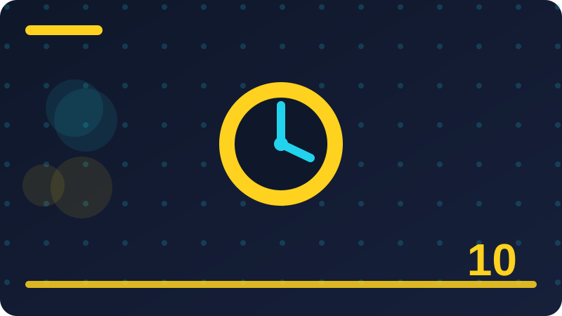

Chapter 10: Updates, Patches and Why They Matter

This chapter teaches updates, patches and why they matter in plain words, for everyday life, work and family. Every section explains one idea clearly, gives an everyday example, and ends with a question that helps you check your own understanding. You do not need special tools to follow it, and every code example is defensive only, for your own systems and files.
Section 1: What Updates Really Are
This section is about what updates really are, and it belongs in updates, patches and why they matter for a practical reason: small choices made in a hurry often decide whether you stay safe or hand an attacker an opening. Beginners sometimes think safety is about secret knowledge or clever software, but most of it is about noticing what is happening, slowing down, and following a simple check before you act. When you understand what updates really are, you can recognise the same pattern in different places, on different devices and in different messages, even when the details change. That transferable skill matters more than memorising one warning sign, because attackers change their wording, designs and stories all the time.
Think about what updates really are step by step. First, ask what is being asked of you, and whether that request makes sense from this sender, on this device, at this time. Second, look for independent evidence: a known address, a bookmark you created, an official app, a phone number you already trusted, or a person you can ask in real life. Third, notice pressure. Real services can wait while you verify, and real colleagues will accept a careful check. Pressure, secrecy, flattery and fear are not proof of danger by themselves, but they are reasons to pause, because honest requests rarely depend on stopping you from thinking. Finally, choose the safest next step, which is often to do nothing yet, close the page or message, and start again through a route you trust.
Imagine a normal day. You are busy, tired or distracted, and a message, page or device prompt asks you to act quickly about what updates really are. It looks familiar, it uses words you expect, and it promises to solve a problem or avoid trouble. In that moment, the easiest action feels helpful: click, reply, approve, download or share. A safer version of the same day looks almost identical, except for one pause. You stop, breathe, and ask one question: how can I check this without using the information in the message itself? That question changes the outcome. You might type an address yourself, call a known number, open the official app, or ask a trusted person. The extra minute is not wasted time; it is the protection itself, and it works even when you cannot explain every technical detail.
Put what updates really are into a habit you can actually keep. Write down your own rule in plain words, for example: I will not log in from a link in an unexpected message, I will not share a code with anyone who asks for it, or I will check updates only in my device settings. Share that rule with family or colleagues if it helps, because a shared rule is easier to follow under pressure than a private intention. Keep your devices and accounts tidy as well: remove apps and accounts you no longer use, use a password manager or another safe method for different passwords, turn on two-step verification where it is offered, and keep a backup of files that matter to you. None of these steps needs to be perfect on the first day.
Check: In your own words, why is delaying a security update risky even when your device seems to work fine?
Section 2: Patches, Upgrades and Versions
This section is about patches, upgrades and versions, and it belongs in updates, patches and why they matter for a practical reason: small choices made in a hurry often decide whether you stay safe or hand an attacker an opening. Beginners sometimes think safety is about secret knowledge or clever software, but most of it is about noticing what is happening, slowing down, and following a simple check before you act. When you understand patches, upgrades and versions, you can recognise the same pattern in different places, on different devices and in different messages, even when the details change. That transferable skill matters more than memorising one warning sign, because attackers change their wording, designs and stories all the time.
Think about patches, upgrades and versions step by step. First, ask what is being asked of you, and whether that request makes sense from this sender, on this device, at this time. Second, look for independent evidence: a known address, a bookmark you created, an official app, a phone number you already trusted, or a person you can ask in real life. Third, notice pressure. Real services can wait while you verify, and real colleagues will accept a careful check. Pressure, secrecy, flattery and fear are not proof of danger by themselves, but they are reasons to pause, because honest requests rarely depend on stopping you from thinking. Finally, choose the safest next step, which is often to do nothing yet, close the page or message, and start again through a route you trust.
Imagine a normal day. You are busy, tired or distracted, and a message, page or device prompt asks you to act quickly about patches, upgrades and versions. It looks familiar, it uses words you expect, and it promises to solve a problem or avoid trouble. In that moment, the easiest action feels helpful: click, reply, approve, download or share. A safer version of the same day looks almost identical, except for one pause. You stop, breathe, and ask one question: how can I check this without using the information in the message itself? That question changes the outcome. You might type an address yourself, call a known number, open the official app, or ask a trusted person. The extra minute is not wasted time; it is the protection itself, and it works even when you cannot explain every technical detail.
Put patches, upgrades and versions into a habit you can actually keep. Write down your own rule in plain words, for example: I will not log in from a link in an unexpected message, I will not share a code with anyone who asks for it, or I will check updates only in my device settings. Share that rule with family or colleagues if it helps, because a shared rule is easier to follow under pressure than a private intention. Keep your devices and accounts tidy as well: remove apps and accounts you no longer use, use a password manager or another safe method for different passwords, turn on two-step verification where it is offered, and keep a backup of files that matter to you. None of these steps needs to be perfect on the first day.
Check: In your own words, why is delaying a security update risky even when your device seems to work fine?
Section 3: Why Software Has Holes at All
This section is about why software has holes at all, and it belongs in updates, patches and why they matter for a practical reason: small choices made in a hurry often decide whether you stay safe or hand an attacker an opening. Beginners sometimes think safety is about secret knowledge or clever software, but most of it is about noticing what is happening, slowing down, and following a simple check before you act. When you understand why software has holes at all, you can recognise the same pattern in different places, on different devices and in different messages, even when the details change. That transferable skill matters more than memorising one warning sign, because attackers change their wording, designs and stories all the time.
Think about why software has holes at all step by step. First, ask what is being asked of you, and whether that request makes sense from this sender, on this device, at this time. Second, look for independent evidence: a known address, a bookmark you created, an official app, a phone number you already trusted, or a person you can ask in real life. Third, notice pressure. Real services can wait while you verify, and real colleagues will accept a careful check. Pressure, secrecy, flattery and fear are not proof of danger by themselves, but they are reasons to pause, because honest requests rarely depend on stopping you from thinking. Finally, choose the safest next step, which is often to do nothing yet, close the page or message, and start again through a route you trust.
Imagine a normal day. You are busy, tired or distracted, and a message, page or device prompt asks you to act quickly about why software has holes at all. It looks familiar, it uses words you expect, and it promises to solve a problem or avoid trouble. In that moment, the easiest action feels helpful: click, reply, approve, download or share. A safer version of the same day looks almost identical, except for one pause. You stop, breathe, and ask one question: how can I check this without using the information in the message itself? That question changes the outcome. You might type an address yourself, call a known number, open the official app, or ask a trusted person. The extra minute is not wasted time; it is the protection itself, and it works even when you cannot explain every technical detail.
Put why software has holes at all into a habit you can actually keep. Write down your own rule in plain words, for example: I will not log in from a link in an unexpected message, I will not share a code with anyone who asks for it, or I will check updates only in my device settings. Share that rule with family or colleagues if it helps, because a shared rule is easier to follow under pressure than a private intention. Keep your devices and accounts tidy as well: remove apps and accounts you no longer use, use a password manager or another safe method for different passwords, turn on two-step verification where it is offered, and keep a backup of files that matter to you.
# Defensive helper: keep a simple update log for YOUR OWN devices.
# This stores only dates and version notes you type in yourself.
def log_update(device, version, date):
entry = f"{date} | {device} | version {version} | checked by owner"
print(entry)
return entry
log_update("My phone", "14.2", "2026-10-30")Check: In your own words, why is delaying a security update risky even when your device seems to work fine?
Section 4: How Attackers Learn About New Holes
This section is about how attackers learn about new holes, and it belongs in updates, patches and why they matter for a practical reason: small choices made in a hurry often decide whether you stay safe or hand an attacker an opening. Beginners sometimes think safety is about secret knowledge or clever software, but most of it is about noticing what is happening, slowing down, and following a simple check before you act. When you understand how attackers learn about new holes, you can recognise the same pattern in different places, on different devices and in different messages, even when the details change. That transferable skill matters more than memorising one warning sign, because attackers change their wording, designs and stories all the time.
Software is never finished, because people keep finding mistakes in it and attackers keep looking for ways to use those mistakes. When a maker publishes a patch, attackers also learn that a hole exists, so unpatched devices become easier targets over time. Updating promptly is therefore a race you want to win quietly, by staying current.
Think about how attackers learn about new holes step by step. First, ask what is being asked of you, and whether that request makes sense from this sender, on this device, at this time. Second, look for independent evidence: a known address, a bookmark you created, an official app, a phone number you already trusted, or a person you can ask in real life. Third, notice pressure. Real services can wait while you verify, and real colleagues will accept a careful check. Pressure, secrecy, flattery and fear are not proof of danger by themselves, but they are reasons to pause, because honest requests rarely depend on stopping you from thinking. Finally, choose the safest next step, which is often to do nothing yet, close the page or message, and start again through a route you trust.
Put how attackers learn about new holes into a habit you can actually keep. Write down your own rule in plain words, for example: I will not log in from a link in an unexpected message, I will not share a code with anyone who asks for it, or I will check updates only in my device settings. Share that rule with family or colleagues if it helps, because a shared rule is easier to follow under pressure than a private intention. Keep your devices and accounts tidy as well: remove apps and accounts you no longer use, use a password manager or another safe method for different passwords, turn on two-step verification where it is offered, and keep a backup of files that matter to you. None of these steps needs to be perfect on the first day. A steady, simple routine beats a complicated plan you abandon, and each safe choice makes the next one easier to remember.
A common mistake with how attackers learn about new holes is to rely on a single sign, such as a professional design, a padlock symbol, a familiar name, or a confident voice. Each of those can be copied or misused, so use at least two independent checks before you trust an important request.
Check: In your own words, why is delaying a security update risky even when your device seems to work fine?
Section 5: Zero-Day Flaws in Plain Words
This section is about zero-day flaws in plain words, and it belongs in updates, patches and why they matter for a practical reason: small choices made in a hurry often decide whether you stay safe or hand an attacker an opening. Beginners sometimes think safety is about secret knowledge or clever software, but most of it is about noticing what is happening, slowing down, and following a simple check before you act. When you understand zero-day flaws in plain words, you can recognise the same pattern in different places, on different devices and in different messages, even when the details change. That transferable skill matters more than memorising one warning sign, because attackers change their wording, designs and stories all the time.
Think about zero-day flaws in plain words step by step. First, ask what is being asked of you, and whether that request makes sense from this sender, on this device, at this time. Second, look for independent evidence: a known address, a bookmark you created, an official app, a phone number you already trusted, or a person you can ask in real life. Third, notice pressure. Real services can wait while you verify, and real colleagues will accept a careful check. Pressure, secrecy, flattery and fear are not proof of danger by themselves, but they are reasons to pause, because honest requests rarely depend on stopping you from thinking. Finally, choose the safest next step, which is often to do nothing yet, close the page or message, and start again through a route you trust.
Imagine a normal day. You are busy, tired or distracted, and a message, page or device prompt asks you to act quickly about zero-day flaws in plain words. It looks familiar, it uses words you expect, and it promises to solve a problem or avoid trouble. In that moment, the easiest action feels helpful: click, reply, approve, download or share. A safer version of the same day looks almost identical, except for one pause. You stop, breathe, and ask one question: how can I check this without using the information in the message itself? That question changes the outcome. You might type an address yourself, call a known number, open the official app, or ask a trusted person. The extra minute is not wasted time; it is the protection itself, and it works even when you cannot explain every technical detail.
Put zero-day flaws in plain words into a habit you can actually keep. Write down your own rule in plain words, for example: I will not log in from a link in an unexpected message, I will not share a code with anyone who asks for it, or I will check updates only in my device settings. Share that rule with family or colleagues if it helps, because a shared rule is easier to follow under pressure than a private intention. Keep your devices and accounts tidy as well: remove apps and accounts you no longer use, use a password manager or another safe method for different passwords, turn on two-step verification where it is offered, and keep a backup of files that matter to you.
Check: In your own words, why is delaying a security update risky even when your device seems to work fine?
Section 6: Why Updating Quickly Matters
This section is about why updating quickly matters, and it belongs in updates, patches and why they matter for a practical reason: small choices made in a hurry often decide whether you stay safe or hand an attacker an opening. Beginners sometimes think safety is about secret knowledge or clever software, but most of it is about noticing what is happening, slowing down, and following a simple check before you act. When you understand why updating quickly matters, you can recognise the same pattern in different places, on different devices and in different messages, even when the details change. That transferable skill matters more than memorising one warning sign, because attackers change their wording, designs and stories all the time.
Think about why updating quickly matters step by step. First, ask what is being asked of you, and whether that request makes sense from this sender, on this device, at this time. Second, look for independent evidence: a known address, a bookmark you created, an official app, a phone number you already trusted, or a person you can ask in real life. Third, notice pressure. Real services can wait while you verify, and real colleagues will accept a careful check. Pressure, secrecy, flattery and fear are not proof of danger by themselves, but they are reasons to pause, because honest requests rarely depend on stopping you from thinking. Finally, choose the safest next step, which is often to do nothing yet, close the page or message, and start again through a route you trust.
Imagine a normal day. You are busy, tired or distracted, and a message, page or device prompt asks you to act quickly about why updating quickly matters. It looks familiar, it uses words you expect, and it promises to solve a problem or avoid trouble. In that moment, the easiest action feels helpful: click, reply, approve, download or share. A safer version of the same day looks almost identical, except for one pause. You stop, breathe, and ask one question: how can I check this without using the information in the message itself? That question changes the outcome. You might type an address yourself, call a known number, open the official app, or ask a trusted person. The extra minute is not wasted time; it is the protection itself, and it works even when you cannot explain every technical detail.
Put why updating quickly matters into a habit you can actually keep. Write down your own rule in plain words, for example: I will not log in from a link in an unexpected message, I will not share a code with anyone who asks for it, or I will check updates only in my device settings. Share that rule with family or colleagues if it helps, because a shared rule is easier to follow under pressure than a private intention. Keep your devices and accounts tidy as well: remove apps and accounts you no longer use, use a password manager or another safe method for different passwords, turn on two-step verification where it is offered, and keep a backup of files that matter to you. None of these steps needs to be perfect on the first day.
# Defensive helper: keep a simple update log for YOUR OWN devices.
# This stores only dates and version notes you type in yourself.
def log_update(device, version, date):
entry = f"{date} | {device} | version {version} | checked by owner"
print(entry)
return entry
log_update("My phone", "14.2", "2026-10-30")Check: In your own words, why is delaying a security update risky even when your device seems to work fine?
Section 7: Automatic Updates: Helpful and Safe
This section is about automatic updates: helpful and safe, and it belongs in updates, patches and why they matter for a practical reason: small choices made in a hurry often decide whether you stay safe or hand an attacker an opening. Beginners sometimes think safety is about secret knowledge or clever software, but most of it is about noticing what is happening, slowing down, and following a simple check before you act. When you understand automatic updates: helpful and safe, you can recognise the same pattern in different places, on different devices and in different messages, even when the details change. That transferable skill matters more than memorising one warning sign, because attackers change their wording, designs and stories all the time.
Think about automatic updates: helpful and safe step by step. First, ask what is being asked of you, and whether that request makes sense from this sender, on this device, at this time. Second, look for independent evidence: a known address, a bookmark you created, an official app, a phone number you already trusted, or a person you can ask in real life. Third, notice pressure. Real services can wait while you verify, and real colleagues will accept a careful check. Pressure, secrecy, flattery and fear are not proof of danger by themselves, but they are reasons to pause, because honest requests rarely depend on stopping you from thinking. Finally, choose the safest next step, which is often to do nothing yet, close the page or message, and start again through a route you trust.
Imagine a normal day. You are busy, tired or distracted, and a message, page or device prompt asks you to act quickly about automatic updates: helpful and safe. It looks familiar, it uses words you expect, and it promises to solve a problem or avoid trouble. In that moment, the easiest action feels helpful: click, reply, approve, download or share. A safer version of the same day looks almost identical, except for one pause. You stop, breathe, and ask one question: how can I check this without using the information in the message itself? That question changes the outcome. You might type an address yourself, call a known number, open the official app, or ask a trusted person. The extra minute is not wasted time; it is the protection itself, and it works even when you cannot explain every technical detail.
Put automatic updates: helpful and safe into a habit you can actually keep. Write down your own rule in plain words, for example: I will not log in from a link in an unexpected message, I will not share a code with anyone who asks for it, or I will check updates only in my device settings. Share that rule with family or colleagues if it helps, because a shared rule is easier to follow under pressure than a private intention. Keep your devices and accounts tidy as well: remove apps and accounts you no longer use, use a password manager or another safe method for different passwords, turn on two-step verification where it is offered, and keep a backup of files that matter to you.
Check: In your own words, why is delaying a security update risky even when your device seems to work fine?
Section 8: Manual Updates When You Prefer Control
This section is about manual updates when you prefer control, and it belongs in updates, patches and why they matter for a practical reason: small choices made in a hurry often decide whether you stay safe or hand an attacker an opening. Beginners sometimes think safety is about secret knowledge or clever software, but most of it is about noticing what is happening, slowing down, and following a simple check before you act. When you understand manual updates when you prefer control, you can recognise the same pattern in different places, on different devices and in different messages, even when the details change. That transferable skill matters more than memorising one warning sign, because attackers change their wording, designs and stories all the time.
Updates can feel annoying because they arrive at busy moments and sometimes change how things look. Still, the cost of a short restart is small compared with the cost of a stolen account, lost files or a compromised device. Planning updates, using automatic updates where they are safe, and checking afterwards makes the habit easy to keep.
Think about manual updates when you prefer control step by step. First, ask what is being asked of you, and whether that request makes sense from this sender, on this device, at this time. Second, look for independent evidence: a known address, a bookmark you created, an official app, a phone number you already trusted, or a person you can ask in real life. Third, notice pressure. Real services can wait while you verify, and real colleagues will accept a careful check. Pressure, secrecy, flattery and fear are not proof of danger by themselves, but they are reasons to pause, because honest requests rarely depend on stopping you from thinking. Finally, choose the safest next step, which is often to do nothing yet, close the page or message, and start again through a route you trust.
Put manual updates when you prefer control into a habit you can actually keep. Write down your own rule in plain words, for example: I will not log in from a link in an unexpected message, I will not share a code with anyone who asks for it, or I will check updates only in my device settings. Share that rule with family or colleagues if it helps, because a shared rule is easier to follow under pressure than a private intention. Keep your devices and accounts tidy as well: remove apps and accounts you no longer use, use a password manager or another safe method for different passwords, turn on two-step verification where it is offered, and keep a backup of files that matter to you. None of these steps needs to be perfect on the first day. A steady, simple routine beats a complicated plan you abandon, and each safe choice makes the next one easier to remember.
A common mistake with manual updates when you prefer control is to rely on a single sign, such as a professional design, a padlock symbol, a familiar name, or a confident voice. Each of those can be copied or misused, so use at least two independent checks before you trust an important request.
Check: In your own words, why is delaying a security update risky even when your device seems to work fine?
Section 9: Updating Your Operating System
This section is about updating your operating system, and it belongs in updates, patches and why they matter for a practical reason: small choices made in a hurry often decide whether you stay safe or hand an attacker an opening. Beginners sometimes think safety is about secret knowledge or clever software, but most of it is about noticing what is happening, slowing down, and following a simple check before you act. When you understand updating your operating system, you can recognise the same pattern in different places, on different devices and in different messages, even when the details change. That transferable skill matters more than memorising one warning sign, because attackers change their wording, designs and stories all the time.
Think about updating your operating system step by step. First, ask what is being asked of you, and whether that request makes sense from this sender, on this device, at this time. Second, look for independent evidence: a known address, a bookmark you created, an official app, a phone number you already trusted, or a person you can ask in real life. Third, notice pressure. Real services can wait while you verify, and real colleagues will accept a careful check. Pressure, secrecy, flattery and fear are not proof of danger by themselves, but they are reasons to pause, because honest requests rarely depend on stopping you from thinking. Finally, choose the safest next step, which is often to do nothing yet, close the page or message, and start again through a route you trust.
Imagine a normal day. You are busy, tired or distracted, and a message, page or device prompt asks you to act quickly about updating your operating system. It looks familiar, it uses words you expect, and it promises to solve a problem or avoid trouble. In that moment, the easiest action feels helpful: click, reply, approve, download or share. A safer version of the same day looks almost identical, except for one pause. You stop, breathe, and ask one question: how can I check this without using the information in the message itself? That question changes the outcome. You might type an address yourself, call a known number, open the official app, or ask a trusted person. The extra minute is not wasted time; it is the protection itself, and it works even when you cannot explain every technical detail.
Put updating your operating system into a habit you can actually keep. Write down your own rule in plain words, for example: I will not log in from a link in an unexpected message, I will not share a code with anyone who asks for it, or I will check updates only in my device settings. Share that rule with family or colleagues if it helps, because a shared rule is easier to follow under pressure than a private intention. Keep your devices and accounts tidy as well: remove apps and accounts you no longer use, use a password manager or another safe method for different passwords, turn on two-step verification where it is offered, and keep a backup of files that matter to you. None of these steps needs to be perfect on the first day.
# Defensive helper: keep a simple update log for YOUR OWN devices.
# This stores only dates and version notes you type in yourself.
def log_update(device, version, date):
entry = f"{date} | {device} | version {version} | checked by owner"
print(entry)
return entry
log_update("My phone", "14.2", "2026-10-30")Check: In your own words, why is delaying a security update risky even when your device seems to work fine?
Section 10: Updating Your Browser
This section is about updating your browser, and it belongs in updates, patches and why they matter for a practical reason: small choices made in a hurry often decide whether you stay safe or hand an attacker an opening. Beginners sometimes think safety is about secret knowledge or clever software, but most of it is about noticing what is happening, slowing down, and following a simple check before you act. When you understand updating your browser, you can recognise the same pattern in different places, on different devices and in different messages, even when the details change. That transferable skill matters more than memorising one warning sign, because attackers change their wording, designs and stories all the time.
Think about updating your browser step by step. First, ask what is being asked of you, and whether that request makes sense from this sender, on this device, at this time. Second, look for independent evidence: a known address, a bookmark you created, an official app, a phone number you already trusted, or a person you can ask in real life. Third, notice pressure. Real services can wait while you verify, and real colleagues will accept a careful check. Pressure, secrecy, flattery and fear are not proof of danger by themselves, but they are reasons to pause, because honest requests rarely depend on stopping you from thinking. Finally, choose the safest next step, which is often to do nothing yet, close the page or message, and start again through a route you trust.
Imagine a normal day. You are busy, tired or distracted, and a message, page or device prompt asks you to act quickly about updating your browser. It looks familiar, it uses words you expect, and it promises to solve a problem or avoid trouble. In that moment, the easiest action feels helpful: click, reply, approve, download or share. A safer version of the same day looks almost identical, except for one pause. You stop, breathe, and ask one question: how can I check this without using the information in the message itself? That question changes the outcome. You might type an address yourself, call a known number, open the official app, or ask a trusted person. The extra minute is not wasted time; it is the protection itself, and it works even when you cannot explain every technical detail.
Put updating your browser into a habit you can actually keep. Write down your own rule in plain words, for example: I will not log in from a link in an unexpected message, I will not share a code with anyone who asks for it, or I will check updates only in my device settings. Share that rule with family or colleagues if it helps, because a shared rule is easier to follow under pressure than a private intention. Keep your devices and accounts tidy as well: remove apps and accounts you no longer use, use a password manager or another safe method for different passwords, turn on two-step verification where it is offered, and keep a backup of files that matter to you. None of these steps needs to be perfect on the first day.
Check: In your own words, why is delaying a security update risky even when your device seems to work fine?
Section 11: Updating Your Apps
This section is about updating your apps, and it belongs in updates, patches and why they matter for a practical reason: small choices made in a hurry often decide whether you stay safe or hand an attacker an opening. Beginners sometimes think safety is about secret knowledge or clever software, but most of it is about noticing what is happening, slowing down, and following a simple check before you act. When you understand updating your apps, you can recognise the same pattern in different places, on different devices and in different messages, even when the details change. That transferable skill matters more than memorising one warning sign, because attackers change their wording, designs and stories all the time.
Think about updating your apps step by step. First, ask what is being asked of you, and whether that request makes sense from this sender, on this device, at this time. Second, look for independent evidence: a known address, a bookmark you created, an official app, a phone number you already trusted, or a person you can ask in real life. Third, notice pressure. Real services can wait while you verify, and real colleagues will accept a careful check. Pressure, secrecy, flattery and fear are not proof of danger by themselves, but they are reasons to pause, because honest requests rarely depend on stopping you from thinking. Finally, choose the safest next step, which is often to do nothing yet, close the page or message, and start again through a route you trust.
Imagine a normal day. You are busy, tired or distracted, and a message, page or device prompt asks you to act quickly about updating your apps. It looks familiar, it uses words you expect, and it promises to solve a problem or avoid trouble. In that moment, the easiest action feels helpful: click, reply, approve, download or share. A safer version of the same day looks almost identical, except for one pause. You stop, breathe, and ask one question: how can I check this without using the information in the message itself? That question changes the outcome. You might type an address yourself, call a known number, open the official app, or ask a trusted person. The extra minute is not wasted time; it is the protection itself, and it works even when you cannot explain every technical detail.
Put updating your apps into a habit you can actually keep. Write down your own rule in plain words, for example: I will not log in from a link in an unexpected message, I will not share a code with anyone who asks for it, or I will check updates only in my device settings. Share that rule with family or colleagues if it helps, because a shared rule is easier to follow under pressure than a private intention. Keep your devices and accounts tidy as well: remove apps and accounts you no longer use, use a password manager or another safe method for different passwords, turn on two-step verification where it is offered, and keep a backup of files that matter to you. None of these steps needs to be perfect on the first day.
Check: In your own words, why is delaying a security update risky even when your device seems to work fine?
Section 12: Updating Your Phone
This section is about updating your phone, and it belongs in updates, patches and why they matter for a practical reason: small choices made in a hurry often decide whether you stay safe or hand an attacker an opening. Beginners sometimes think safety is about secret knowledge or clever software, but most of it is about noticing what is happening, slowing down, and following a simple check before you act. When you understand updating your phone, you can recognise the same pattern in different places, on different devices and in different messages, even when the details change. That transferable skill matters more than memorising one warning sign, because attackers change their wording, designs and stories all the time.
An update is a fix, an improvement or both, sent by the maker of software after it has been released. A patch is a smaller, focused update that usually fixes a specific security problem. Together they close holes that attackers have learned to use, and they keep your apps working well with newer systems and standards.
Think about updating your phone step by step. First, ask what is being asked of you, and whether that request makes sense from this sender, on this device, at this time. Second, look for independent evidence: a known address, a bookmark you created, an official app, a phone number you already trusted, or a person you can ask in real life. Third, notice pressure. Real services can wait while you verify, and real colleagues will accept a careful check. Pressure, secrecy, flattery and fear are not proof of danger by themselves, but they are reasons to pause, because honest requests rarely depend on stopping you from thinking. Finally, choose the safest next step, which is often to do nothing yet, close the page or message, and start again through a route you trust.
Put updating your phone into a habit you can actually keep. Write down your own rule in plain words, for example: I will not log in from a link in an unexpected message, I will not share a code with anyone who asks for it, or I will check updates only in my device settings. Share that rule with family or colleagues if it helps, because a shared rule is easier to follow under pressure than a private intention. Keep your devices and accounts tidy as well: remove apps and accounts you no longer use, use a password manager or another safe method for different passwords, turn on two-step verification where it is offered, and keep a backup of files that matter to you. None of these steps needs to be perfect on the first day. A steady, simple routine beats a complicated plan you abandon, and each safe choice makes the next one easier to remember.
A common mistake with updating your phone is to rely on a single sign, such as a professional design, a padlock symbol, a familiar name, or a confident voice. Each of those can be copied or misused, so use at least two independent checks before you trust an important request. Another mistake is to feel embarrassed after a close call and stay silent.
# Defensive helper: keep a simple update log for YOUR OWN devices.
# This stores only dates and version notes you type in yourself.
def log_update(device, version, date):
entry = f"{date} | {device} | version {version} | checked by owner"
print(entry)
return entry
log_update("My phone", "14.2", "2026-10-30")Check: In your own words, why is delaying a security update risky even when your device seems to work fine?
Section 13: Updating Your Computer
This section is about updating your computer, and it belongs in updates, patches and why they matter for a practical reason: small choices made in a hurry often decide whether you stay safe or hand an attacker an opening. Beginners sometimes think safety is about secret knowledge or clever software, but most of it is about noticing what is happening, slowing down, and following a simple check before you act. When you understand updating your computer, you can recognise the same pattern in different places, on different devices and in different messages, even when the details change. That transferable skill matters more than memorising one warning sign, because attackers change their wording, designs and stories all the time.
Think about updating your computer step by step. First, ask what is being asked of you, and whether that request makes sense from this sender, on this device, at this time. Second, look for independent evidence: a known address, a bookmark you created, an official app, a phone number you already trusted, or a person you can ask in real life. Third, notice pressure. Real services can wait while you verify, and real colleagues will accept a careful check. Pressure, secrecy, flattery and fear are not proof of danger by themselves, but they are reasons to pause, because honest requests rarely depend on stopping you from thinking. Finally, choose the safest next step, which is often to do nothing yet, close the page or message, and start again through a route you trust.
Imagine a normal day. You are busy, tired or distracted, and a message, page or device prompt asks you to act quickly about updating your computer. It looks familiar, it uses words you expect, and it promises to solve a problem or avoid trouble. In that moment, the easiest action feels helpful: click, reply, approve, download or share. A safer version of the same day looks almost identical, except for one pause. You stop, breathe, and ask one question: how can I check this without using the information in the message itself? That question changes the outcome. You might type an address yourself, call a known number, open the official app, or ask a trusted person. The extra minute is not wasted time; it is the protection itself, and it works even when you cannot explain every technical detail.
Put updating your computer into a habit you can actually keep. Write down your own rule in plain words, for example: I will not log in from a link in an unexpected message, I will not share a code with anyone who asks for it, or I will check updates only in my device settings. Share that rule with family or colleagues if it helps, because a shared rule is easier to follow under pressure than a private intention. Keep your devices and accounts tidy as well: remove apps and accounts you no longer use, use a password manager or another safe method for different passwords, turn on two-step verification where it is offered, and keep a backup of files that matter to you. None of these steps needs to be perfect on the first day.
Check: In your own words, why is delaying a security update risky even when your device seems to work fine?
Section 14: Updating Your Router
This section is about updating your router, and it belongs in updates, patches and why they matter for a practical reason: small choices made in a hurry often decide whether you stay safe or hand an attacker an opening. Beginners sometimes think safety is about secret knowledge or clever software, but most of it is about noticing what is happening, slowing down, and following a simple check before you act. When you understand updating your router, you can recognise the same pattern in different places, on different devices and in different messages, even when the details change. That transferable skill matters more than memorising one warning sign, because attackers change their wording, designs and stories all the time.
Think about updating your router step by step. First, ask what is being asked of you, and whether that request makes sense from this sender, on this device, at this time. Second, look for independent evidence: a known address, a bookmark you created, an official app, a phone number you already trusted, or a person you can ask in real life. Third, notice pressure. Real services can wait while you verify, and real colleagues will accept a careful check. Pressure, secrecy, flattery and fear are not proof of danger by themselves, but they are reasons to pause, because honest requests rarely depend on stopping you from thinking. Finally, choose the safest next step, which is often to do nothing yet, close the page or message, and start again through a route you trust.
Imagine a normal day. You are busy, tired or distracted, and a message, page or device prompt asks you to act quickly about updating your router. It looks familiar, it uses words you expect, and it promises to solve a problem or avoid trouble. In that moment, the easiest action feels helpful: click, reply, approve, download or share. A safer version of the same day looks almost identical, except for one pause. You stop, breathe, and ask one question: how can I check this without using the information in the message itself? That question changes the outcome. You might type an address yourself, call a known number, open the official app, or ask a trusted person. The extra minute is not wasted time; it is the protection itself, and it works even when you cannot explain every technical detail.
Put updating your router into a habit you can actually keep. Write down your own rule in plain words, for example: I will not log in from a link in an unexpected message, I will not share a code with anyone who asks for it, or I will check updates only in my device settings. Share that rule with family or colleagues if it helps, because a shared rule is easier to follow under pressure than a private intention. Keep your devices and accounts tidy as well: remove apps and accounts you no longer use, use a password manager or another safe method for different passwords, turn on two-step verification where it is offered, and keep a backup of files that matter to you. None of these steps needs to be perfect on the first day.
Check: In your own words, why is delaying a security update risky even when your device seems to work fine?
Section 15: Updating Smart Devices
This section is about updating smart devices, and it belongs in updates, patches and why they matter for a practical reason: small choices made in a hurry often decide whether you stay safe or hand an attacker an opening. Beginners sometimes think safety is about secret knowledge or clever software, but most of it is about noticing what is happening, slowing down, and following a simple check before you act. When you understand updating smart devices, you can recognise the same pattern in different places, on different devices and in different messages, even when the details change. That transferable skill matters more than memorising one warning sign, because attackers change their wording, designs and stories all the time.
Think about updating smart devices step by step. First, ask what is being asked of you, and whether that request makes sense from this sender, on this device, at this time. Second, look for independent evidence: a known address, a bookmark you created, an official app, a phone number you already trusted, or a person you can ask in real life. Third, notice pressure. Real services can wait while you verify, and real colleagues will accept a careful check. Pressure, secrecy, flattery and fear are not proof of danger by themselves, but they are reasons to pause, because honest requests rarely depend on stopping you from thinking. Finally, choose the safest next step, which is often to do nothing yet, close the page or message, and start again through a route you trust.
Imagine a normal day. You are busy, tired or distracted, and a message, page or device prompt asks you to act quickly about updating smart devices. It looks familiar, it uses words you expect, and it promises to solve a problem or avoid trouble. In that moment, the easiest action feels helpful: click, reply, approve, download or share. A safer version of the same day looks almost identical, except for one pause. You stop, breathe, and ask one question: how can I check this without using the information in the message itself? That question changes the outcome. You might type an address yourself, call a known number, open the official app, or ask a trusted person. The extra minute is not wasted time; it is the protection itself, and it works even when you cannot explain every technical detail.
Put updating smart devices into a habit you can actually keep. Write down your own rule in plain words, for example: I will not log in from a link in an unexpected message, I will not share a code with anyone who asks for it, or I will check updates only in my device settings. Share that rule with family or colleagues if it helps, because a shared rule is easier to follow under pressure than a private intention. Keep your devices and accounts tidy as well: remove apps and accounts you no longer use, use a password manager or another safe method for different passwords, turn on two-step verification where it is offered, and keep a backup of files that matter to you. None of these steps needs to be perfect on the first day.
# Defensive helper: keep a simple update log for YOUR OWN devices.
# This stores only dates and version notes you type in yourself.
def log_update(device, version, date):
entry = f"{date} | {device} | version {version} | checked by owner"
print(entry)
return entry
log_update("My phone", "14.2", "2026-10-30")Check: In your own words, why is delaying a security update risky even when your device seems to work fine?
Section 16: Updating Games and Media Apps
This section is about updating games and media apps, and it belongs in updates, patches and why they matter for a practical reason: small choices made in a hurry often decide whether you stay safe or hand an attacker an opening. Beginners sometimes think safety is about secret knowledge or clever software, but most of it is about noticing what is happening, slowing down, and following a simple check before you act. When you understand updating games and media apps, you can recognise the same pattern in different places, on different devices and in different messages, even when the details change. That transferable skill matters more than memorising one warning sign, because attackers change their wording, designs and stories all the time.
Software is never finished, because people keep finding mistakes in it and attackers keep looking for ways to use those mistakes. When a maker publishes a patch, attackers also learn that a hole exists, so unpatched devices become easier targets over time. Updating promptly is therefore a race you want to win quietly, by staying current.
Think about updating games and media apps step by step. First, ask what is being asked of you, and whether that request makes sense from this sender, on this device, at this time. Second, look for independent evidence: a known address, a bookmark you created, an official app, a phone number you already trusted, or a person you can ask in real life. Third, notice pressure. Real services can wait while you verify, and real colleagues will accept a careful check. Pressure, secrecy, flattery and fear are not proof of danger by themselves, but they are reasons to pause, because honest requests rarely depend on stopping you from thinking. Finally, choose the safest next step, which is often to do nothing yet, close the page or message, and start again through a route you trust.
Put updating games and media apps into a habit you can actually keep. Write down your own rule in plain words, for example: I will not log in from a link in an unexpected message, I will not share a code with anyone who asks for it, or I will check updates only in my device settings. Share that rule with family or colleagues if it helps, because a shared rule is easier to follow under pressure than a private intention. Keep your devices and accounts tidy as well: remove apps and accounts you no longer use, use a password manager or another safe method for different passwords, turn on two-step verification where it is offered, and keep a backup of files that matter to you. None of these steps needs to be perfect on the first day. A steady, simple routine beats a complicated plan you abandon, and each safe choice makes the next one easier to remember.
A common mistake with updating games and media apps is to rely on a single sign, such as a professional design, a padlock symbol, a familiar name, or a confident voice. Each of those can be copied or misused, so use at least two independent checks before you trust an important request.
Check: In your own words, why is delaying a security update risky even when your device seems to work fine?
Section 17: What Happens During an Update
This section is about what happens during an update, and it belongs in updates, patches and why they matter for a practical reason: small choices made in a hurry often decide whether you stay safe or hand an attacker an opening. Beginners sometimes think safety is about secret knowledge or clever software, but most of it is about noticing what is happening, slowing down, and following a simple check before you act. When you understand what happens during an update, you can recognise the same pattern in different places, on different devices and in different messages, even when the details change. That transferable skill matters more than memorising one warning sign, because attackers change their wording, designs and stories all the time.
Think about what happens during an update step by step. First, ask what is being asked of you, and whether that request makes sense from this sender, on this device, at this time. Second, look for independent evidence: a known address, a bookmark you created, an official app, a phone number you already trusted, or a person you can ask in real life. Third, notice pressure. Real services can wait while you verify, and real colleagues will accept a careful check. Pressure, secrecy, flattery and fear are not proof of danger by themselves, but they are reasons to pause, because honest requests rarely depend on stopping you from thinking. Finally, choose the safest next step, which is often to do nothing yet, close the page or message, and start again through a route you trust.
Imagine a normal day. You are busy, tired or distracted, and a message, page or device prompt asks you to act quickly about what happens during an update. It looks familiar, it uses words you expect, and it promises to solve a problem or avoid trouble. In that moment, the easiest action feels helpful: click, reply, approve, download or share. A safer version of the same day looks almost identical, except for one pause. You stop, breathe, and ask one question: how can I check this without using the information in the message itself? That question changes the outcome. You might type an address yourself, call a known number, open the official app, or ask a trusted person. The extra minute is not wasted time; it is the protection itself, and it works even when you cannot explain every technical detail.
Put what happens during an update into a habit you can actually keep. Write down your own rule in plain words, for example: I will not log in from a link in an unexpected message, I will not share a code with anyone who asks for it, or I will check updates only in my device settings. Share that rule with family or colleagues if it helps, because a shared rule is easier to follow under pressure than a private intention. Keep your devices and accounts tidy as well: remove apps and accounts you no longer use, use a password manager or another safe method for different passwords, turn on two-step verification where it is offered, and keep a backup of files that matter to you.
Check: In your own words, why is delaying a security update risky even when your device seems to work fine?
Section 18: Why Devices Restart After Updates
This section is about why devices restart after updates, and it belongs in updates, patches and why they matter for a practical reason: small choices made in a hurry often decide whether you stay safe or hand an attacker an opening. Beginners sometimes think safety is about secret knowledge or clever software, but most of it is about noticing what is happening, slowing down, and following a simple check before you act. When you understand why devices restart after updates, you can recognise the same pattern in different places, on different devices and in different messages, even when the details change. That transferable skill matters more than memorising one warning sign, because attackers change their wording, designs and stories all the time.
Think about why devices restart after updates step by step. First, ask what is being asked of you, and whether that request makes sense from this sender, on this device, at this time. Second, look for independent evidence: a known address, a bookmark you created, an official app, a phone number you already trusted, or a person you can ask in real life. Third, notice pressure. Real services can wait while you verify, and real colleagues will accept a careful check. Pressure, secrecy, flattery and fear are not proof of danger by themselves, but they are reasons to pause, because honest requests rarely depend on stopping you from thinking. Finally, choose the safest next step, which is often to do nothing yet, close the page or message, and start again through a route you trust.
Imagine a normal day. You are busy, tired or distracted, and a message, page or device prompt asks you to act quickly about why devices restart after updates. It looks familiar, it uses words you expect, and it promises to solve a problem or avoid trouble. In that moment, the easiest action feels helpful: click, reply, approve, download or share. A safer version of the same day looks almost identical, except for one pause. You stop, breathe, and ask one question: how can I check this without using the information in the message itself? That question changes the outcome. You might type an address yourself, call a known number, open the official app, or ask a trusted person. The extra minute is not wasted time; it is the protection itself, and it works even when you cannot explain every technical detail.
Put why devices restart after updates into a habit you can actually keep. Write down your own rule in plain words, for example: I will not log in from a link in an unexpected message, I will not share a code with anyone who asks for it, or I will check updates only in my device settings. Share that rule with family or colleagues if it helps, because a shared rule is easier to follow under pressure than a private intention. Keep your devices and accounts tidy as well: remove apps and accounts you no longer use, use a password manager or another safe method for different passwords, turn on two-step verification where it is offered, and keep a backup of files that matter to you.
# Defensive helper: keep a simple update log for YOUR OWN devices.
# This stores only dates and version notes you type in yourself.
def log_update(device, version, date):
entry = f"{date} | {device} | version {version} | checked by owner"
print(entry)
return entry
log_update("My phone", "14.2", "2026-10-30")Check: In your own words, why is delaying a security update risky even when your device seems to work fine?
Section 19: Update Notes and What They Tell You
This section is about update notes and what they tell you, and it belongs in updates, patches and why they matter for a practical reason: small choices made in a hurry often decide whether you stay safe or hand an attacker an opening. Beginners sometimes think safety is about secret knowledge or clever software, but most of it is about noticing what is happening, slowing down, and following a simple check before you act. When you understand update notes and what they tell you, you can recognise the same pattern in different places, on different devices and in different messages, even when the details change. That transferable skill matters more than memorising one warning sign, because attackers change their wording, designs and stories all the time.
Think about update notes and what they tell you step by step. First, ask what is being asked of you, and whether that request makes sense from this sender, on this device, at this time. Second, look for independent evidence: a known address, a bookmark you created, an official app, a phone number you already trusted, or a person you can ask in real life. Third, notice pressure. Real services can wait while you verify, and real colleagues will accept a careful check. Pressure, secrecy, flattery and fear are not proof of danger by themselves, but they are reasons to pause, because honest requests rarely depend on stopping you from thinking. Finally, choose the safest next step, which is often to do nothing yet, close the page or message, and start again through a route you trust.
Imagine a normal day. You are busy, tired or distracted, and a message, page or device prompt asks you to act quickly about update notes and what they tell you. It looks familiar, it uses words you expect, and it promises to solve a problem or avoid trouble. In that moment, the easiest action feels helpful: click, reply, approve, download or share. A safer version of the same day looks almost identical, except for one pause. You stop, breathe, and ask one question: how can I check this without using the information in the message itself? That question changes the outcome. You might type an address yourself, call a known number, open the official app, or ask a trusted person. The extra minute is not wasted time; it is the protection itself, and it works even when you cannot explain every technical detail.
Put update notes and what they tell you into a habit you can actually keep. Write down your own rule in plain words, for example: I will not log in from a link in an unexpected message, I will not share a code with anyone who asks for it, or I will check updates only in my device settings. Share that rule with family or colleagues if it helps, because a shared rule is easier to follow under pressure than a private intention.
Check: In your own words, why is delaying a security update risky even when your device seems to work fine?
Section 20: Failed Updates and What to Do
This section is about failed updates and what to do, and it belongs in updates, patches and why they matter for a practical reason: small choices made in a hurry often decide whether you stay safe or hand an attacker an opening. Beginners sometimes think safety is about secret knowledge or clever software, but most of it is about noticing what is happening, slowing down, and following a simple check before you act. When you understand failed updates and what to do, you can recognise the same pattern in different places, on different devices and in different messages, even when the details change. That transferable skill matters more than memorising one warning sign, because attackers change their wording, designs and stories all the time.
Updates can feel annoying because they arrive at busy moments and sometimes change how things look. Still, the cost of a short restart is small compared with the cost of a stolen account, lost files or a compromised device. Planning updates, using automatic updates where they are safe, and checking afterwards makes the habit easy to keep.
Think about failed updates and what to do step by step. First, ask what is being asked of you, and whether that request makes sense from this sender, on this device, at this time. Second, look for independent evidence: a known address, a bookmark you created, an official app, a phone number you already trusted, or a person you can ask in real life. Third, notice pressure. Real services can wait while you verify, and real colleagues will accept a careful check. Pressure, secrecy, flattery and fear are not proof of danger by themselves, but they are reasons to pause, because honest requests rarely depend on stopping you from thinking. Finally, choose the safest next step, which is often to do nothing yet, close the page or message, and start again through a route you trust.
Put failed updates and what to do into a habit you can actually keep. Write down your own rule in plain words, for example: I will not log in from a link in an unexpected message, I will not share a code with anyone who asks for it, or I will check updates only in my device settings. Share that rule with family or colleagues if it helps, because a shared rule is easier to follow under pressure than a private intention. Keep your devices and accounts tidy as well: remove apps and accounts you no longer use, use a password manager or another safe method for different passwords, turn on two-step verification where it is offered, and keep a backup of files that matter to you. None of these steps needs to be perfect on the first day. A steady, simple routine beats a complicated plan you abandon, and each safe choice makes the next one easier to remember.
A common mistake with failed updates and what to do is to rely on a single sign, such as a professional design, a padlock symbol, a familiar name, or a confident voice. Each of those can be copied or misused, so use at least two independent checks before you trust an important request.
Check: In your own words, why is delaying a security update risky even when your device seems to work fine?
Section 21: Updates That Seem Stuck
This section is about updates that seem stuck, and it belongs in updates, patches and why they matter for a practical reason: small choices made in a hurry often decide whether you stay safe or hand an attacker an opening. Beginners sometimes think safety is about secret knowledge or clever software, but most of it is about noticing what is happening, slowing down, and following a simple check before you act. When you understand updates that seem stuck, you can recognise the same pattern in different places, on different devices and in different messages, even when the details change. That transferable skill matters more than memorising one warning sign, because attackers change their wording, designs and stories all the time.
Think about updates that seem stuck step by step. First, ask what is being asked of you, and whether that request makes sense from this sender, on this device, at this time. Second, look for independent evidence: a known address, a bookmark you created, an official app, a phone number you already trusted, or a person you can ask in real life. Third, notice pressure. Real services can wait while you verify, and real colleagues will accept a careful check. Pressure, secrecy, flattery and fear are not proof of danger by themselves, but they are reasons to pause, because honest requests rarely depend on stopping you from thinking. Finally, choose the safest next step, which is often to do nothing yet, close the page or message, and start again through a route you trust.
Imagine a normal day. You are busy, tired or distracted, and a message, page or device prompt asks you to act quickly about updates that seem stuck. It looks familiar, it uses words you expect, and it promises to solve a problem or avoid trouble. In that moment, the easiest action feels helpful: click, reply, approve, download or share. A safer version of the same day looks almost identical, except for one pause. You stop, breathe, and ask one question: how can I check this without using the information in the message itself? That question changes the outcome. You might type an address yourself, call a known number, open the official app, or ask a trusted person. The extra minute is not wasted time; it is the protection itself, and it works even when you cannot explain every technical detail.
Put updates that seem stuck into a habit you can actually keep. Write down your own rule in plain words, for example: I will not log in from a link in an unexpected message, I will not share a code with anyone who asks for it, or I will check updates only in my device settings. Share that rule with family or colleagues if it helps, because a shared rule is easier to follow under pressure than a private intention. Keep your devices and accounts tidy as well: remove apps and accounts you no longer use, use a password manager or another safe method for different passwords, turn on two-step verification where it is offered, and keep a backup of files that matter to you. None of these steps needs to be perfect on the first day.
# Defensive helper: keep a simple update log for YOUR OWN devices.
# This stores only dates and version notes you type in yourself.
def log_update(device, version, date):
entry = f"{date} | {device} | version {version} | checked by owner"
print(entry)
return entry
log_update("My phone", "14.2", "2026-10-30")Check: In your own words, why is delaying a security update risky even when your device seems to work fine?
Section 22: Checking an Update Is Genuine
This section is about checking an update is genuine, and it belongs in updates, patches and why they matter for a practical reason: small choices made in a hurry often decide whether you stay safe or hand an attacker an opening. Beginners sometimes think safety is about secret knowledge or clever software, but most of it is about noticing what is happening, slowing down, and following a simple check before you act. When you understand checking an update is genuine, you can recognise the same pattern in different places, on different devices and in different messages, even when the details change. That transferable skill matters more than memorising one warning sign, because attackers change their wording, designs and stories all the time.
Think about checking an update is genuine step by step. First, ask what is being asked of you, and whether that request makes sense from this sender, on this device, at this time. Second, look for independent evidence: a known address, a bookmark you created, an official app, a phone number you already trusted, or a person you can ask in real life. Third, notice pressure. Real services can wait while you verify, and real colleagues will accept a careful check. Pressure, secrecy, flattery and fear are not proof of danger by themselves, but they are reasons to pause, because honest requests rarely depend on stopping you from thinking. Finally, choose the safest next step, which is often to do nothing yet, close the page or message, and start again through a route you trust.
Imagine a normal day. You are busy, tired or distracted, and a message, page or device prompt asks you to act quickly about checking an update is genuine. It looks familiar, it uses words you expect, and it promises to solve a problem or avoid trouble. In that moment, the easiest action feels helpful: click, reply, approve, download or share. A safer version of the same day looks almost identical, except for one pause. You stop, breathe, and ask one question: how can I check this without using the information in the message itself? That question changes the outcome. You might type an address yourself, call a known number, open the official app, or ask a trusted person. The extra minute is not wasted time; it is the protection itself, and it works even when you cannot explain every technical detail.
Put checking an update is genuine into a habit you can actually keep. Write down your own rule in plain words, for example: I will not log in from a link in an unexpected message, I will not share a code with anyone who asks for it, or I will check updates only in my device settings. Share that rule with family or colleagues if it helps, because a shared rule is easier to follow under pressure than a private intention. Keep your devices and accounts tidy as well: remove apps and accounts you no longer use, use a password manager or another safe method for different passwords, turn on two-step verification where it is offered, and keep a backup of files that matter to you.
Check: In your own words, why is delaying a security update risky even when your device seems to work fine?
Section 23: Fake Update Pop-Ups
This section is about fake update pop-ups, and it belongs in updates, patches and why they matter for a practical reason: small choices made in a hurry often decide whether you stay safe or hand an attacker an opening. Beginners sometimes think safety is about secret knowledge or clever software, but most of it is about noticing what is happening, slowing down, and following a simple check before you act. When you understand fake update pop-ups, you can recognise the same pattern in different places, on different devices and in different messages, even when the details change. That transferable skill matters more than memorising one warning sign, because attackers change their wording, designs and stories all the time.
Think about fake update pop-ups step by step. First, ask what is being asked of you, and whether that request makes sense from this sender, on this device, at this time. Second, look for independent evidence: a known address, a bookmark you created, an official app, a phone number you already trusted, or a person you can ask in real life. Third, notice pressure. Real services can wait while you verify, and real colleagues will accept a careful check. Pressure, secrecy, flattery and fear are not proof of danger by themselves, but they are reasons to pause, because honest requests rarely depend on stopping you from thinking. Finally, choose the safest next step, which is often to do nothing yet, close the page or message, and start again through a route you trust.
Imagine a normal day. You are busy, tired or distracted, and a message, page or device prompt asks you to act quickly about fake update pop-ups. It looks familiar, it uses words you expect, and it promises to solve a problem or avoid trouble. In that moment, the easiest action feels helpful: click, reply, approve, download or share. A safer version of the same day looks almost identical, except for one pause. You stop, breathe, and ask one question: how can I check this without using the information in the message itself? That question changes the outcome. You might type an address yourself, call a known number, open the official app, or ask a trusted person. The extra minute is not wasted time; it is the protection itself, and it works even when you cannot explain every technical detail.
Put fake update pop-ups into a habit you can actually keep. Write down your own rule in plain words, for example: I will not log in from a link in an unexpected message, I will not share a code with anyone who asks for it, or I will check updates only in my device settings. Share that rule with family or colleagues if it helps, because a shared rule is easier to follow under pressure than a private intention. Keep your devices and accounts tidy as well: remove apps and accounts you no longer use, use a password manager or another safe method for different passwords, turn on two-step verification where it is offered, and keep a backup of files that matter to you. None of these steps needs to be perfect on the first day.
Check: In your own words, why is delaying a security update risky even when your device seems to work fine?
Section 24: Updates From Unofficial Sources
This section is about updates from unofficial sources, and it belongs in updates, patches and why they matter for a practical reason: small choices made in a hurry often decide whether you stay safe or hand an attacker an opening. Beginners sometimes think safety is about secret knowledge or clever software, but most of it is about noticing what is happening, slowing down, and following a simple check before you act. When you understand updates from unofficial sources, you can recognise the same pattern in different places, on different devices and in different messages, even when the details change. That transferable skill matters more than memorising one warning sign, because attackers change their wording, designs and stories all the time.
An update is a fix, an improvement or both, sent by the maker of software after it has been released. A patch is a smaller, focused update that usually fixes a specific security problem. Together they close holes that attackers have learned to use, and they keep your apps working well with newer systems and standards.
Think about updates from unofficial sources step by step. First, ask what is being asked of you, and whether that request makes sense from this sender, on this device, at this time. Second, look for independent evidence: a known address, a bookmark you created, an official app, a phone number you already trusted, or a person you can ask in real life. Third, notice pressure. Real services can wait while you verify, and real colleagues will accept a careful check. Pressure, secrecy, flattery and fear are not proof of danger by themselves, but they are reasons to pause, because honest requests rarely depend on stopping you from thinking. Finally, choose the safest next step, which is often to do nothing yet, close the page or message, and start again through a route you trust.
Put updates from unofficial sources into a habit you can actually keep. Write down your own rule in plain words, for example: I will not log in from a link in an unexpected message, I will not share a code with anyone who asks for it, or I will check updates only in my device settings. Share that rule with family or colleagues if it helps, because a shared rule is easier to follow under pressure than a private intention. Keep your devices and accounts tidy as well: remove apps and accounts you no longer use, use a password manager or another safe method for different passwords, turn on two-step verification where it is offered, and keep a backup of files that matter to you. None of these steps needs to be perfect on the first day. A steady, simple routine beats a complicated plan you abandon, and each safe choice makes the next one easier to remember.
A common mistake with updates from unofficial sources is to rely on a single sign, such as a professional design, a padlock symbol, a familiar name, or a confident voice. Each of those can be copied or misused, so use at least two independent checks before you trust an important request. Another mistake is to feel embarrassed after a close call and stay silent.
# Defensive helper: keep a simple update log for YOUR OWN devices.
# This stores only dates and version notes you type in yourself.
def log_update(device, version, date):
entry = f"{date} | {device} | version {version} | checked by owner"
print(entry)
return entry
log_update("My phone", "14.2", "2026-10-30")Check: In your own words, why is delaying a security update risky even when your device seems to work fine?
Section 25: Old Software Nobody Maintains
This section is about old software nobody maintains, and it belongs in updates, patches and why they matter for a practical reason: small choices made in a hurry often decide whether you stay safe or hand an attacker an opening. Beginners sometimes think safety is about secret knowledge or clever software, but most of it is about noticing what is happening, slowing down, and following a simple check before you act. When you understand old software nobody maintains, you can recognise the same pattern in different places, on different devices and in different messages, even when the details change. That transferable skill matters more than memorising one warning sign, because attackers change their wording, designs and stories all the time.
Think about old software nobody maintains step by step. First, ask what is being asked of you, and whether that request makes sense from this sender, on this device, at this time. Second, look for independent evidence: a known address, a bookmark you created, an official app, a phone number you already trusted, or a person you can ask in real life. Third, notice pressure. Real services can wait while you verify, and real colleagues will accept a careful check. Pressure, secrecy, flattery and fear are not proof of danger by themselves, but they are reasons to pause, because honest requests rarely depend on stopping you from thinking. Finally, choose the safest next step, which is often to do nothing yet, close the page or message, and start again through a route you trust.
Imagine a normal day. You are busy, tired or distracted, and a message, page or device prompt asks you to act quickly about old software nobody maintains. It looks familiar, it uses words you expect, and it promises to solve a problem or avoid trouble. In that moment, the easiest action feels helpful: click, reply, approve, download or share. A safer version of the same day looks almost identical, except for one pause. You stop, breathe, and ask one question: how can I check this without using the information in the message itself? That question changes the outcome. You might type an address yourself, call a known number, open the official app, or ask a trusted person. The extra minute is not wasted time; it is the protection itself, and it works even when you cannot explain every technical detail.
Put old software nobody maintains into a habit you can actually keep. Write down your own rule in plain words, for example: I will not log in from a link in an unexpected message, I will not share a code with anyone who asks for it, or I will check updates only in my device settings. Share that rule with family or colleagues if it helps, because a shared rule is easier to follow under pressure than a private intention. Keep your devices and accounts tidy as well: remove apps and accounts you no longer use, use a password manager or another safe method for different passwords, turn on two-step verification where it is offered, and keep a backup of files that matter to you. None of these steps needs to be perfect on the first day.
Check: In your own words, why is delaying a security update risky even when your device seems to work fine?
Section 26: End-of-Life Software in Plain Words
This section is about end-of-life software in plain words, and it belongs in updates, patches and why they matter for a practical reason: small choices made in a hurry often decide whether you stay safe or hand an attacker an opening. Beginners sometimes think safety is about secret knowledge or clever software, but most of it is about noticing what is happening, slowing down, and following a simple check before you act. When you understand end-of-life software in plain words, you can recognise the same pattern in different places, on different devices and in different messages, even when the details change. That transferable skill matters more than memorising one warning sign, because attackers change their wording, designs and stories all the time.
Think about end-of-life software in plain words step by step. First, ask what is being asked of you, and whether that request makes sense from this sender, on this device, at this time. Second, look for independent evidence: a known address, a bookmark you created, an official app, a phone number you already trusted, or a person you can ask in real life. Third, notice pressure. Real services can wait while you verify, and real colleagues will accept a careful check. Pressure, secrecy, flattery and fear are not proof of danger by themselves, but they are reasons to pause, because honest requests rarely depend on stopping you from thinking. Finally, choose the safest next step, which is often to do nothing yet, close the page or message, and start again through a route you trust.
Imagine a normal day. You are busy, tired or distracted, and a message, page or device prompt asks you to act quickly about end-of-life software in plain words. It looks familiar, it uses words you expect, and it promises to solve a problem or avoid trouble. In that moment, the easiest action feels helpful: click, reply, approve, download or share. A safer version of the same day looks almost identical, except for one pause. You stop, breathe, and ask one question: how can I check this without using the information in the message itself? That question changes the outcome. You might type an address yourself, call a known number, open the official app, or ask a trusted person. The extra minute is not wasted time; it is the protection itself, and it works even when you cannot explain every technical detail.
Put end-of-life software in plain words into a habit you can actually keep. Write down your own rule in plain words, for example: I will not log in from a link in an unexpected message, I will not share a code with anyone who asks for it, or I will check updates only in my device settings. Share that rule with family or colleagues if it helps, because a shared rule is easier to follow under pressure than a private intention. Keep your devices and accounts tidy as well: remove apps and accounts you no longer use, use a password manager or another safe method for different passwords, turn on two-step verification where it is offered, and keep a backup of files that matter to you.
Check: In your own words, why is delaying a security update risky even when your device seems to work fine?
Section 27: Replacing Software That Cannot Update
This section is about replacing software that cannot update, and it belongs in updates, patches and why they matter for a practical reason: small choices made in a hurry often decide whether you stay safe or hand an attacker an opening. Beginners sometimes think safety is about secret knowledge or clever software, but most of it is about noticing what is happening, slowing down, and following a simple check before you act. When you understand replacing software that cannot update, you can recognise the same pattern in different places, on different devices and in different messages, even when the details change. That transferable skill matters more than memorising one warning sign, because attackers change their wording, designs and stories all the time.
Think about replacing software that cannot update step by step. First, ask what is being asked of you, and whether that request makes sense from this sender, on this device, at this time. Second, look for independent evidence: a known address, a bookmark you created, an official app, a phone number you already trusted, or a person you can ask in real life. Third, notice pressure. Real services can wait while you verify, and real colleagues will accept a careful check. Pressure, secrecy, flattery and fear are not proof of danger by themselves, but they are reasons to pause, because honest requests rarely depend on stopping you from thinking. Finally, choose the safest next step, which is often to do nothing yet, close the page or message, and start again through a route you trust.
Imagine a normal day. You are busy, tired or distracted, and a message, page or device prompt asks you to act quickly about replacing software that cannot update. It looks familiar, it uses words you expect, and it promises to solve a problem or avoid trouble. In that moment, the easiest action feels helpful: click, reply, approve, download or share. A safer version of the same day looks almost identical, except for one pause. You stop, breathe, and ask one question: how can I check this without using the information in the message itself? That question changes the outcome. You might type an address yourself, call a known number, open the official app, or ask a trusted person. The extra minute is not wasted time; it is the protection itself, and it works even when you cannot explain every technical detail.
Put replacing software that cannot update into a habit you can actually keep. Write down your own rule in plain words, for example: I will not log in from a link in an unexpected message, I will not share a code with anyone who asks for it, or I will check updates only in my device settings. Share that rule with family or colleagues if it helps, because a shared rule is easier to follow under pressure than a private intention. Keep your devices and accounts tidy as well: remove apps and accounts you no longer use, use a password manager or another safe method for different passwords, turn on two-step verification where it is offered, and keep a backup of files that matter to you.
# Defensive helper: keep a simple update log for YOUR OWN devices.
# This stores only dates and version notes you type in yourself.
def log_update(device, version, date):
entry = f"{date} | {device} | version {version} | checked by owner"
print(entry)
return entry
log_update("My phone", "14.2", "2026-10-30")Check: In your own words, why is delaying a security update risky even when your device seems to work fine?
Section 28: Backing Up Before a Big Update
This section is about backing up before a big update, and it belongs in updates, patches and why they matter for a practical reason: small choices made in a hurry often decide whether you stay safe or hand an attacker an opening. Beginners sometimes think safety is about secret knowledge or clever software, but most of it is about noticing what is happening, slowing down, and following a simple check before you act. When you understand backing up before a big update, you can recognise the same pattern in different places, on different devices and in different messages, even when the details change. That transferable skill matters more than memorising one warning sign, because attackers change their wording, designs and stories all the time.
Software is never finished, because people keep finding mistakes in it and attackers keep looking for ways to use those mistakes. When a maker publishes a patch, attackers also learn that a hole exists, so unpatched devices become easier targets over time. Updating promptly is therefore a race you want to win quietly, by staying current.
Think about backing up before a big update step by step. First, ask what is being asked of you, and whether that request makes sense from this sender, on this device, at this time. Second, look for independent evidence: a known address, a bookmark you created, an official app, a phone number you already trusted, or a person you can ask in real life. Third, notice pressure. Real services can wait while you verify, and real colleagues will accept a careful check. Pressure, secrecy, flattery and fear are not proof of danger by themselves, but they are reasons to pause, because honest requests rarely depend on stopping you from thinking. Finally, choose the safest next step, which is often to do nothing yet, close the page or message, and start again through a route you trust.
Put backing up before a big update into a habit you can actually keep. Write down your own rule in plain words, for example: I will not log in from a link in an unexpected message, I will not share a code with anyone who asks for it, or I will check updates only in my device settings. Share that rule with family or colleagues if it helps, because a shared rule is easier to follow under pressure than a private intention. Keep your devices and accounts tidy as well: remove apps and accounts you no longer use, use a password manager or another safe method for different passwords, turn on two-step verification where it is offered, and keep a backup of files that matter to you. None of these steps needs to be perfect on the first day. A steady, simple routine beats a complicated plan you abandon, and each safe choice makes the next one easier to remember.
A common mistake with backing up before a big update is to rely on a single sign, such as a professional design, a padlock symbol, a familiar name, or a confident voice. Each of those can be copied or misused, so use at least two independent checks before you trust an important request.
Check: In your own words, why is delaying a security update risky even when your device seems to work fine?
Section 29: Testing Updates at Work
This section is about testing updates at work, and it belongs in updates, patches and why they matter for a practical reason: small choices made in a hurry often decide whether you stay safe or hand an attacker an opening. Beginners sometimes think safety is about secret knowledge or clever software, but most of it is about noticing what is happening, slowing down, and following a simple check before you act. When you understand testing updates at work, you can recognise the same pattern in different places, on different devices and in different messages, even when the details change. That transferable skill matters more than memorising one warning sign, because attackers change their wording, designs and stories all the time.
Think about testing updates at work step by step. First, ask what is being asked of you, and whether that request makes sense from this sender, on this device, at this time. Second, look for independent evidence: a known address, a bookmark you created, an official app, a phone number you already trusted, or a person you can ask in real life. Third, notice pressure. Real services can wait while you verify, and real colleagues will accept a careful check. Pressure, secrecy, flattery and fear are not proof of danger by themselves, but they are reasons to pause, because honest requests rarely depend on stopping you from thinking. Finally, choose the safest next step, which is often to do nothing yet, close the page or message, and start again through a route you trust.
Imagine a normal day. You are busy, tired or distracted, and a message, page or device prompt asks you to act quickly about testing updates at work. It looks familiar, it uses words you expect, and it promises to solve a problem or avoid trouble. In that moment, the easiest action feels helpful: click, reply, approve, download or share. A safer version of the same day looks almost identical, except for one pause. You stop, breathe, and ask one question: how can I check this without using the information in the message itself? That question changes the outcome. You might type an address yourself, call a known number, open the official app, or ask a trusted person. The extra minute is not wasted time; it is the protection itself, and it works even when you cannot explain every technical detail.
Put testing updates at work into a habit you can actually keep. Write down your own rule in plain words, for example: I will not log in from a link in an unexpected message, I will not share a code with anyone who asks for it, or I will check updates only in my device settings. Share that rule with family or colleagues if it helps, because a shared rule is easier to follow under pressure than a private intention. Keep your devices and accounts tidy as well: remove apps and accounts you no longer use, use a password manager or another safe method for different passwords, turn on two-step verification where it is offered, and keep a backup of files that matter to you. None of these steps needs to be perfect on the first day.
Check: In your own words, why is delaying a security update risky even when your device seems to work fine?
Section 30: Rolling Back a Bad Update
This section is about rolling back a bad update, and it belongs in updates, patches and why they matter for a practical reason: small choices made in a hurry often decide whether you stay safe or hand an attacker an opening. Beginners sometimes think safety is about secret knowledge or clever software, but most of it is about noticing what is happening, slowing down, and following a simple check before you act. When you understand rolling back a bad update, you can recognise the same pattern in different places, on different devices and in different messages, even when the details change. That transferable skill matters more than memorising one warning sign, because attackers change their wording, designs and stories all the time.
Think about rolling back a bad update step by step. First, ask what is being asked of you, and whether that request makes sense from this sender, on this device, at this time. Second, look for independent evidence: a known address, a bookmark you created, an official app, a phone number you already trusted, or a person you can ask in real life. Third, notice pressure. Real services can wait while you verify, and real colleagues will accept a careful check. Pressure, secrecy, flattery and fear are not proof of danger by themselves, but they are reasons to pause, because honest requests rarely depend on stopping you from thinking. Finally, choose the safest next step, which is often to do nothing yet, close the page or message, and start again through a route you trust.
Imagine a normal day. You are busy, tired or distracted, and a message, page or device prompt asks you to act quickly about rolling back a bad update. It looks familiar, it uses words you expect, and it promises to solve a problem or avoid trouble. In that moment, the easiest action feels helpful: click, reply, approve, download or share. A safer version of the same day looks almost identical, except for one pause. You stop, breathe, and ask one question: how can I check this without using the information in the message itself? That question changes the outcome. You might type an address yourself, call a known number, open the official app, or ask a trusted person. The extra minute is not wasted time; it is the protection itself, and it works even when you cannot explain every technical detail.
Put rolling back a bad update into a habit you can actually keep. Write down your own rule in plain words, for example: I will not log in from a link in an unexpected message, I will not share a code with anyone who asks for it, or I will check updates only in my device settings. Share that rule with family or colleagues if it helps, because a shared rule is easier to follow under pressure than a private intention. Keep your devices and accounts tidy as well: remove apps and accounts you no longer use, use a password manager or another safe method for different passwords, turn on two-step verification where it is offered, and keep a backup of files that matter to you.
# Defensive helper: keep a simple update log for YOUR OWN devices.
# This stores only dates and version notes you type in yourself.
def log_update(device, version, date):
entry = f"{date} | {device} | version {version} | checked by owner"
print(entry)
return entry
log_update("My phone", "14.2", "2026-10-30")Check: In your own words, why is delaying a security update risky even when your device seems to work fine?
Section 31: Update Schedules for Busy People
This section is about update schedules for busy people, and it belongs in updates, patches and why they matter for a practical reason: small choices made in a hurry often decide whether you stay safe or hand an attacker an opening. Beginners sometimes think safety is about secret knowledge or clever software, but most of it is about noticing what is happening, slowing down, and following a simple check before you act. When you understand update schedules for busy people, you can recognise the same pattern in different places, on different devices and in different messages, even when the details change. That transferable skill matters more than memorising one warning sign, because attackers change their wording, designs and stories all the time.
Think about update schedules for busy people step by step. First, ask what is being asked of you, and whether that request makes sense from this sender, on this device, at this time. Second, look for independent evidence: a known address, a bookmark you created, an official app, a phone number you already trusted, or a person you can ask in real life. Third, notice pressure. Real services can wait while you verify, and real colleagues will accept a careful check. Pressure, secrecy, flattery and fear are not proof of danger by themselves, but they are reasons to pause, because honest requests rarely depend on stopping you from thinking. Finally, choose the safest next step, which is often to do nothing yet, close the page or message, and start again through a route you trust.
Imagine a normal day. You are busy, tired or distracted, and a message, page or device prompt asks you to act quickly about update schedules for busy people. It looks familiar, it uses words you expect, and it promises to solve a problem or avoid trouble. In that moment, the easiest action feels helpful: click, reply, approve, download or share. A safer version of the same day looks almost identical, except for one pause. You stop, breathe, and ask one question: how can I check this without using the information in the message itself? That question changes the outcome. You might type an address yourself, call a known number, open the official app, or ask a trusted person. The extra minute is not wasted time; it is the protection itself, and it works even when you cannot explain every technical detail.
Put update schedules for busy people into a habit you can actually keep. Write down your own rule in plain words, for example: I will not log in from a link in an unexpected message, I will not share a code with anyone who asks for it, or I will check updates only in my device settings. Share that rule with family or colleagues if it helps, because a shared rule is easier to follow under pressure than a private intention. Keep your devices and accounts tidy as well: remove apps and accounts you no longer use, use a password manager or another safe method for different passwords, turn on two-step verification where it is offered, and keep a backup of files that matter to you.
Check: In your own words, why is delaying a security update risky even when your device seems to work fine?
Section 32: Updates on Slow or Costly Connections
This section is about updates on slow or costly connections, and it belongs in updates, patches and why they matter for a practical reason: small choices made in a hurry often decide whether you stay safe or hand an attacker an opening. Beginners sometimes think safety is about secret knowledge or clever software, but most of it is about noticing what is happening, slowing down, and following a simple check before you act. When you understand updates on slow or costly connections, you can recognise the same pattern in different places, on different devices and in different messages, even when the details change. That transferable skill matters more than memorising one warning sign, because attackers change their wording, designs and stories all the time.
Updates can feel annoying because they arrive at busy moments and sometimes change how things look. Still, the cost of a short restart is small compared with the cost of a stolen account, lost files or a compromised device. Planning updates, using automatic updates where they are safe, and checking afterwards makes the habit easy to keep.
Think about updates on slow or costly connections step by step. First, ask what is being asked of you, and whether that request makes sense from this sender, on this device, at this time. Second, look for independent evidence: a known address, a bookmark you created, an official app, a phone number you already trusted, or a person you can ask in real life. Third, notice pressure. Real services can wait while you verify, and real colleagues will accept a careful check. Pressure, secrecy, flattery and fear are not proof of danger by themselves, but they are reasons to pause, because honest requests rarely depend on stopping you from thinking. Finally, choose the safest next step, which is often to do nothing yet, close the page or message, and start again through a route you trust.
Put updates on slow or costly connections into a habit you can actually keep. Write down your own rule in plain words, for example: I will not log in from a link in an unexpected message, I will not share a code with anyone who asks for it, or I will check updates only in my device settings. Share that rule with family or colleagues if it helps, because a shared rule is easier to follow under pressure than a private intention. Keep your devices and accounts tidy as well: remove apps and accounts you no longer use, use a password manager or another safe method for different passwords, turn on two-step verification where it is offered, and keep a backup of files that matter to you. None of these steps needs to be perfect on the first day. A steady, simple routine beats a complicated plan you abandon, and each safe choice makes the next one easier to remember.
A common mistake with updates on slow or costly connections is to rely on a single sign, such as a professional design, a padlock symbol, a familiar name, or a confident voice. Each of those can be copied or misused, so use at least two independent checks before you trust an important request.
Check: In your own words, why is delaying a security update risky even when your device seems to work fine?
Section 33: Updates While Travelling
This section is about updates while travelling, and it belongs in updates, patches and why they matter for a practical reason: small choices made in a hurry often decide whether you stay safe or hand an attacker an opening. Beginners sometimes think safety is about secret knowledge or clever software, but most of it is about noticing what is happening, slowing down, and following a simple check before you act. When you understand updates while travelling, you can recognise the same pattern in different places, on different devices and in different messages, even when the details change. That transferable skill matters more than memorising one warning sign, because attackers change their wording, designs and stories all the time.
Think about updates while travelling step by step. First, ask what is being asked of you, and whether that request makes sense from this sender, on this device, at this time. Second, look for independent evidence: a known address, a bookmark you created, an official app, a phone number you already trusted, or a person you can ask in real life. Third, notice pressure. Real services can wait while you verify, and real colleagues will accept a careful check. Pressure, secrecy, flattery and fear are not proof of danger by themselves, but they are reasons to pause, because honest requests rarely depend on stopping you from thinking. Finally, choose the safest next step, which is often to do nothing yet, close the page or message, and start again through a route you trust.
Imagine a normal day. You are busy, tired or distracted, and a message, page or device prompt asks you to act quickly about updates while travelling. It looks familiar, it uses words you expect, and it promises to solve a problem or avoid trouble. In that moment, the easiest action feels helpful: click, reply, approve, download or share. A safer version of the same day looks almost identical, except for one pause. You stop, breathe, and ask one question: how can I check this without using the information in the message itself? That question changes the outcome. You might type an address yourself, call a known number, open the official app, or ask a trusted person. The extra minute is not wasted time; it is the protection itself, and it works even when you cannot explain every technical detail.
Put updates while travelling into a habit you can actually keep. Write down your own rule in plain words, for example: I will not log in from a link in an unexpected message, I will not share a code with anyone who asks for it, or I will check updates only in my device settings. Share that rule with family or colleagues if it helps, because a shared rule is easier to follow under pressure than a private intention. Keep your devices and accounts tidy as well: remove apps and accounts you no longer use, use a password manager or another safe method for different passwords, turn on two-step verification where it is offered, and keep a backup of files that matter to you. None of these steps needs to be perfect on the first day.
# Defensive helper: keep a simple update log for YOUR OWN devices.
# This stores only dates and version notes you type in yourself.
def log_update(device, version, date):
entry = f"{date} | {device} | version {version} | checked by owner"
print(entry)
return entry
log_update("My phone", "14.2", "2026-10-30")Check: In your own words, why is delaying a security update risky even when your device seems to work fine?
Section 34: Security Updates Versus Feature Updates
This section is about security updates versus feature updates, and it belongs in updates, patches and why they matter for a practical reason: small choices made in a hurry often decide whether you stay safe or hand an attacker an opening. Beginners sometimes think safety is about secret knowledge or clever software, but most of it is about noticing what is happening, slowing down, and following a simple check before you act. When you understand security updates versus feature updates, you can recognise the same pattern in different places, on different devices and in different messages, even when the details change. That transferable skill matters more than memorising one warning sign, because attackers change their wording, designs and stories all the time.
Think about security updates versus feature updates step by step. First, ask what is being asked of you, and whether that request makes sense from this sender, on this device, at this time. Second, look for independent evidence: a known address, a bookmark you created, an official app, a phone number you already trusted, or a person you can ask in real life. Third, notice pressure. Real services can wait while you verify, and real colleagues will accept a careful check. Pressure, secrecy, flattery and fear are not proof of danger by themselves, but they are reasons to pause, because honest requests rarely depend on stopping you from thinking. Finally, choose the safest next step, which is often to do nothing yet, close the page or message, and start again through a route you trust.
Imagine a normal day. You are busy, tired or distracted, and a message, page or device prompt asks you to act quickly about security updates versus feature updates. It looks familiar, it uses words you expect, and it promises to solve a problem or avoid trouble. In that moment, the easiest action feels helpful: click, reply, approve, download or share. A safer version of the same day looks almost identical, except for one pause. You stop, breathe, and ask one question: how can I check this without using the information in the message itself? That question changes the outcome. You might type an address yourself, call a known number, open the official app, or ask a trusted person. The extra minute is not wasted time; it is the protection itself, and it works even when you cannot explain every technical detail.
Put security updates versus feature updates into a habit you can actually keep. Write down your own rule in plain words, for example: I will not log in from a link in an unexpected message, I will not share a code with anyone who asks for it, or I will check updates only in my device settings. Share that rule with family or colleagues if it helps, because a shared rule is easier to follow under pressure than a private intention. Keep your devices and accounts tidy as well: remove apps and accounts you no longer use, use a password manager or another safe method for different passwords, turn on two-step verification where it is offered, and keep a backup of files that matter to you.
Check: In your own words, why is delaying a security update risky even when your device seems to work fine?
Section 35: Why Features Wait but Security Does Not
This section is about why features wait but security does not, and it belongs in updates, patches and why they matter for a practical reason: small choices made in a hurry often decide whether you stay safe or hand an attacker an opening. Beginners sometimes think safety is about secret knowledge or clever software, but most of it is about noticing what is happening, slowing down, and following a simple check before you act. When you understand why features wait but security does not, you can recognise the same pattern in different places, on different devices and in different messages, even when the details change. That transferable skill matters more than memorising one warning sign, because attackers change their wording, designs and stories all the time.
Think about why features wait but security does not step by step. First, ask what is being asked of you, and whether that request makes sense from this sender, on this device, at this time. Second, look for independent evidence: a known address, a bookmark you created, an official app, a phone number you already trusted, or a person you can ask in real life. Third, notice pressure. Real services can wait while you verify, and real colleagues will accept a careful check. Pressure, secrecy, flattery and fear are not proof of danger by themselves, but they are reasons to pause, because honest requests rarely depend on stopping you from thinking. Finally, choose the safest next step, which is often to do nothing yet, close the page or message, and start again through a route you trust.
Imagine a normal day. You are busy, tired or distracted, and a message, page or device prompt asks you to act quickly about why features wait but security does not. It looks familiar, it uses words you expect, and it promises to solve a problem or avoid trouble. In that moment, the easiest action feels helpful: click, reply, approve, download or share. A safer version of the same day looks almost identical, except for one pause. You stop, breathe, and ask one question: how can I check this without using the information in the message itself? That question changes the outcome. You might type an address yourself, call a known number, open the official app, or ask a trusted person. The extra minute is not wasted time; it is the protection itself, and it works even when you cannot explain every technical detail.
Put why features wait but security does not into a habit you can actually keep. Write down your own rule in plain words, for example: I will not log in from a link in an unexpected message, I will not share a code with anyone who asks for it, or I will check updates only in my device settings. Share that rule with family or colleagues if it helps, because a shared rule is easier to follow under pressure than a private intention.
Check: In your own words, why is delaying a security update risky even when your device seems to work fine?
Section 36: Keeping a Simple Update Log
This section is about keeping a simple update log, and it belongs in updates, patches and why they matter for a practical reason: small choices made in a hurry often decide whether you stay safe or hand an attacker an opening. Beginners sometimes think safety is about secret knowledge or clever software, but most of it is about noticing what is happening, slowing down, and following a simple check before you act. When you understand keeping a simple update log, you can recognise the same pattern in different places, on different devices and in different messages, even when the details change. That transferable skill matters more than memorising one warning sign, because attackers change their wording, designs and stories all the time.
An update is a fix, an improvement or both, sent by the maker of software after it has been released. A patch is a smaller, focused update that usually fixes a specific security problem. Together they close holes that attackers have learned to use, and they keep your apps working well with newer systems and standards.
Think about keeping a simple update log step by step. First, ask what is being asked of you, and whether that request makes sense from this sender, on this device, at this time. Second, look for independent evidence: a known address, a bookmark you created, an official app, a phone number you already trusted, or a person you can ask in real life. Third, notice pressure. Real services can wait while you verify, and real colleagues will accept a careful check. Pressure, secrecy, flattery and fear are not proof of danger by themselves, but they are reasons to pause, because honest requests rarely depend on stopping you from thinking. Finally, choose the safest next step, which is often to do nothing yet, close the page or message, and start again through a route you trust.
Put keeping a simple update log into a habit you can actually keep. Write down your own rule in plain words, for example: I will not log in from a link in an unexpected message, I will not share a code with anyone who asks for it, or I will check updates only in my device settings. Share that rule with family or colleagues if it helps, because a shared rule is easier to follow under pressure than a private intention. Keep your devices and accounts tidy as well: remove apps and accounts you no longer use, use a password manager or another safe method for different passwords, turn on two-step verification where it is offered, and keep a backup of files that matter to you. None of these steps needs to be perfect on the first day. A steady, simple routine beats a complicated plan you abandon, and each safe choice makes the next one easier to remember.
A common mistake with keeping a simple update log is to rely on a single sign, such as a professional design, a padlock symbol, a familiar name, or a confident voice. Each of those can be copied or misused, so use at least two independent checks before you trust an important request.
# Defensive helper: keep a simple update log for YOUR OWN devices.
# This stores only dates and version notes you type in yourself.
def log_update(device, version, date):
entry = f"{date} | {device} | version {version} | checked by owner"
print(entry)
return entry
log_update("My phone", "14.2", "2026-10-30")Check: In your own words, why is delaying a security update risky even when your device seems to work fine?
Section 37: Checking Update History on Your Device
This section is about checking update history on your device, and it belongs in updates, patches and why they matter for a practical reason: small choices made in a hurry often decide whether you stay safe or hand an attacker an opening. Beginners sometimes think safety is about secret knowledge or clever software, but most of it is about noticing what is happening, slowing down, and following a simple check before you act. When you understand checking update history on your device, you can recognise the same pattern in different places, on different devices and in different messages, even when the details change. That transferable skill matters more than memorising one warning sign, because attackers change their wording, designs and stories all the time.
Think about checking update history on your device step by step. First, ask what is being asked of you, and whether that request makes sense from this sender, on this device, at this time. Second, look for independent evidence: a known address, a bookmark you created, an official app, a phone number you already trusted, or a person you can ask in real life. Third, notice pressure. Real services can wait while you verify, and real colleagues will accept a careful check. Pressure, secrecy, flattery and fear are not proof of danger by themselves, but they are reasons to pause, because honest requests rarely depend on stopping you from thinking. Finally, choose the safest next step, which is often to do nothing yet, close the page or message, and start again through a route you trust.
Imagine a normal day. You are busy, tired or distracted, and a message, page or device prompt asks you to act quickly about checking update history on your device. It looks familiar, it uses words you expect, and it promises to solve a problem or avoid trouble. In that moment, the easiest action feels helpful: click, reply, approve, download or share. A safer version of the same day looks almost identical, except for one pause. You stop, breathe, and ask one question: how can I check this without using the information in the message itself? That question changes the outcome. You might type an address yourself, call a known number, open the official app, or ask a trusted person. The extra minute is not wasted time; it is the protection itself, and it works even when you cannot explain every technical detail.
Put checking update history on your device into a habit you can actually keep. Write down your own rule in plain words, for example: I will not log in from a link in an unexpected message, I will not share a code with anyone who asks for it, or I will check updates only in my device settings. Share that rule with family or colleagues if it helps, because a shared rule is easier to follow under pressure than a private intention. Keep your devices and accounts tidy as well: remove apps and accounts you no longer use, use a password manager or another safe method for different passwords, turn on two-step verification where it is offered, and keep a backup of files that matter to you.
Check: In your own words, why is delaying a security update risky even when your device seems to work fine?
Section 38: Helping Family Stay Updated
This section is about helping family stay updated, and it belongs in updates, patches and why they matter for a practical reason: small choices made in a hurry often decide whether you stay safe or hand an attacker an opening. Beginners sometimes think safety is about secret knowledge or clever software, but most of it is about noticing what is happening, slowing down, and following a simple check before you act. When you understand helping family stay updated, you can recognise the same pattern in different places, on different devices and in different messages, even when the details change. That transferable skill matters more than memorising one warning sign, because attackers change their wording, designs and stories all the time.
Think about helping family stay updated step by step. First, ask what is being asked of you, and whether that request makes sense from this sender, on this device, at this time. Second, look for independent evidence: a known address, a bookmark you created, an official app, a phone number you already trusted, or a person you can ask in real life. Third, notice pressure. Real services can wait while you verify, and real colleagues will accept a careful check. Pressure, secrecy, flattery and fear are not proof of danger by themselves, but they are reasons to pause, because honest requests rarely depend on stopping you from thinking. Finally, choose the safest next step, which is often to do nothing yet, close the page or message, and start again through a route you trust.
Imagine a normal day. You are busy, tired or distracted, and a message, page or device prompt asks you to act quickly about helping family stay updated. It looks familiar, it uses words you expect, and it promises to solve a problem or avoid trouble. In that moment, the easiest action feels helpful: click, reply, approve, download or share. A safer version of the same day looks almost identical, except for one pause. You stop, breathe, and ask one question: how can I check this without using the information in the message itself? That question changes the outcome. You might type an address yourself, call a known number, open the official app, or ask a trusted person. The extra minute is not wasted time; it is the protection itself, and it works even when you cannot explain every technical detail.
Put helping family stay updated into a habit you can actually keep. Write down your own rule in plain words, for example: I will not log in from a link in an unexpected message, I will not share a code with anyone who asks for it, or I will check updates only in my device settings. Share that rule with family or colleagues if it helps, because a shared rule is easier to follow under pressure than a private intention. Keep your devices and accounts tidy as well: remove apps and accounts you no longer use, use a password manager or another safe method for different passwords, turn on two-step verification where it is offered, and keep a backup of files that matter to you. None of these steps needs to be perfect on the first day.
Check: In your own words, why is delaying a security update risky even when your device seems to work fine?
Section 39: Updates in Schools and Offices
This section is about updates in schools and offices, and it belongs in updates, patches and why they matter for a practical reason: small choices made in a hurry often decide whether you stay safe or hand an attacker an opening. Beginners sometimes think safety is about secret knowledge or clever software, but most of it is about noticing what is happening, slowing down, and following a simple check before you act. When you understand updates in schools and offices, you can recognise the same pattern in different places, on different devices and in different messages, even when the details change. That transferable skill matters more than memorising one warning sign, because attackers change their wording, designs and stories all the time.
Think about updates in schools and offices step by step. First, ask what is being asked of you, and whether that request makes sense from this sender, on this device, at this time. Second, look for independent evidence: a known address, a bookmark you created, an official app, a phone number you already trusted, or a person you can ask in real life. Third, notice pressure. Real services can wait while you verify, and real colleagues will accept a careful check. Pressure, secrecy, flattery and fear are not proof of danger by themselves, but they are reasons to pause, because honest requests rarely depend on stopping you from thinking. Finally, choose the safest next step, which is often to do nothing yet, close the page or message, and start again through a route you trust.
Imagine a normal day. You are busy, tired or distracted, and a message, page or device prompt asks you to act quickly about updates in schools and offices. It looks familiar, it uses words you expect, and it promises to solve a problem or avoid trouble. In that moment, the easiest action feels helpful: click, reply, approve, download or share. A safer version of the same day looks almost identical, except for one pause. You stop, breathe, and ask one question: how can I check this without using the information in the message itself? That question changes the outcome. You might type an address yourself, call a known number, open the official app, or ask a trusted person. The extra minute is not wasted time; it is the protection itself, and it works even when you cannot explain every technical detail.
Put updates in schools and offices into a habit you can actually keep. Write down your own rule in plain words, for example: I will not log in from a link in an unexpected message, I will not share a code with anyone who asks for it, or I will check updates only in my device settings. Share that rule with family or colleagues if it helps, because a shared rule is easier to follow under pressure than a private intention. Keep your devices and accounts tidy as well: remove apps and accounts you no longer use, use a password manager or another safe method for different passwords, turn on two-step verification where it is offered, and keep a backup of files that matter to you.
# Defensive helper: keep a simple update log for YOUR OWN devices.
# This stores only dates and version notes you type in yourself.
def log_update(device, version, date):
entry = f"{date} | {device} | version {version} | checked by owner"
print(entry)
return entry
log_update("My phone", "14.2", "2026-10-30")Check: In your own words, why is delaying a security update risky even when your device seems to work fine?
Section 40: Update Policies in Plain Words
This section is about update policies in plain words, and it belongs in updates, patches and why they matter for a practical reason: small choices made in a hurry often decide whether you stay safe or hand an attacker an opening. Beginners sometimes think safety is about secret knowledge or clever software, but most of it is about noticing what is happening, slowing down, and following a simple check before you act. When you understand update policies in plain words, you can recognise the same pattern in different places, on different devices and in different messages, even when the details change. That transferable skill matters more than memorising one warning sign, because attackers change their wording, designs and stories all the time.
Software is never finished, because people keep finding mistakes in it and attackers keep looking for ways to use those mistakes. When a maker publishes a patch, attackers also learn that a hole exists, so unpatched devices become easier targets over time. Updating promptly is therefore a race you want to win quietly, by staying current.
Think about update policies in plain words step by step. First, ask what is being asked of you, and whether that request makes sense from this sender, on this device, at this time. Second, look for independent evidence: a known address, a bookmark you created, an official app, a phone number you already trusted, or a person you can ask in real life. Third, notice pressure. Real services can wait while you verify, and real colleagues will accept a careful check. Pressure, secrecy, flattery and fear are not proof of danger by themselves, but they are reasons to pause, because honest requests rarely depend on stopping you from thinking. Finally, choose the safest next step, which is often to do nothing yet, close the page or message, and start again through a route you trust.
Put update policies in plain words into a habit you can actually keep. Write down your own rule in plain words, for example: I will not log in from a link in an unexpected message, I will not share a code with anyone who asks for it, or I will check updates only in my device settings. Share that rule with family or colleagues if it helps, because a shared rule is easier to follow under pressure than a private intention. Keep your devices and accounts tidy as well: remove apps and accounts you no longer use, use a password manager or another safe method for different passwords, turn on two-step verification where it is offered, and keep a backup of files that matter to you. None of these steps needs to be perfect on the first day. A steady, simple routine beats a complicated plan you abandon, and each safe choice makes the next one easier to remember.
A common mistake with update policies in plain words is to rely on a single sign, such as a professional design, a padlock symbol, a familiar name, or a confident voice. Each of those can be copied or misused, so use at least two independent checks before you trust an important request.
Check: In your own words, why is delaying a security update risky even when your device seems to work fine?
Section 41: When an Update Changes How Things Look
This section is about when an update changes how things look, and it belongs in updates, patches and why they matter for a practical reason: small choices made in a hurry often decide whether you stay safe or hand an attacker an opening. Beginners sometimes think safety is about secret knowledge or clever software, but most of it is about noticing what is happening, slowing down, and following a simple check before you act. When you understand when an update changes how things look, you can recognise the same pattern in different places, on different devices and in different messages, even when the details change. That transferable skill matters more than memorising one warning sign, because attackers change their wording, designs and stories all the time.
Think about when an update changes how things look step by step. First, ask what is being asked of you, and whether that request makes sense from this sender, on this device, at this time. Second, look for independent evidence: a known address, a bookmark you created, an official app, a phone number you already trusted, or a person you can ask in real life. Third, notice pressure. Real services can wait while you verify, and real colleagues will accept a careful check. Pressure, secrecy, flattery and fear are not proof of danger by themselves, but they are reasons to pause, because honest requests rarely depend on stopping you from thinking. Finally, choose the safest next step, which is often to do nothing yet, close the page or message, and start again through a route you trust.
Imagine a normal day. You are busy, tired or distracted, and a message, page or device prompt asks you to act quickly about when an update changes how things look. It looks familiar, it uses words you expect, and it promises to solve a problem or avoid trouble. In that moment, the easiest action feels helpful: click, reply, approve, download or share. A safer version of the same day looks almost identical, except for one pause. You stop, breathe, and ask one question: how can I check this without using the information in the message itself? That question changes the outcome. You might type an address yourself, call a known number, open the official app, or ask a trusted person. The extra minute is not wasted time; it is the protection itself, and it works even when you cannot explain every technical detail.
Put when an update changes how things look into a habit you can actually keep. Write down your own rule in plain words, for example: I will not log in from a link in an unexpected message, I will not share a code with anyone who asks for it, or I will check updates only in my device settings. Share that rule with family or colleagues if it helps, because a shared rule is easier to follow under pressure than a private intention.
Check: In your own words, why is delaying a security update risky even when your device seems to work fine?
Section 42: Relearning After an Update
This section is about relearning after an update, and it belongs in updates, patches and why they matter for a practical reason: small choices made in a hurry often decide whether you stay safe or hand an attacker an opening. Beginners sometimes think safety is about secret knowledge or clever software, but most of it is about noticing what is happening, slowing down, and following a simple check before you act. When you understand relearning after an update, you can recognise the same pattern in different places, on different devices and in different messages, even when the details change. That transferable skill matters more than memorising one warning sign, because attackers change their wording, designs and stories all the time.
Think about relearning after an update step by step. First, ask what is being asked of you, and whether that request makes sense from this sender, on this device, at this time. Second, look for independent evidence: a known address, a bookmark you created, an official app, a phone number you already trusted, or a person you can ask in real life. Third, notice pressure. Real services can wait while you verify, and real colleagues will accept a careful check. Pressure, secrecy, flattery and fear are not proof of danger by themselves, but they are reasons to pause, because honest requests rarely depend on stopping you from thinking. Finally, choose the safest next step, which is often to do nothing yet, close the page or message, and start again through a route you trust.
Imagine a normal day. You are busy, tired or distracted, and a message, page or device prompt asks you to act quickly about relearning after an update. It looks familiar, it uses words you expect, and it promises to solve a problem or avoid trouble. In that moment, the easiest action feels helpful: click, reply, approve, download or share. A safer version of the same day looks almost identical, except for one pause. You stop, breathe, and ask one question: how can I check this without using the information in the message itself? That question changes the outcome. You might type an address yourself, call a known number, open the official app, or ask a trusted person. The extra minute is not wasted time; it is the protection itself, and it works even when you cannot explain every technical detail.
Put relearning after an update into a habit you can actually keep. Write down your own rule in plain words, for example: I will not log in from a link in an unexpected message, I will not share a code with anyone who asks for it, or I will check updates only in my device settings. Share that rule with family or colleagues if it helps, because a shared rule is easier to follow under pressure than a private intention. Keep your devices and accounts tidy as well: remove apps and accounts you no longer use, use a password manager or another safe method for different passwords, turn on two-step verification where it is offered, and keep a backup of files that matter to you. None of these steps needs to be perfect on the first day.
# Defensive helper: keep a simple update log for YOUR OWN devices.
# This stores only dates and version notes you type in yourself.
def log_update(device, version, date):
entry = f"{date} | {device} | version {version} | checked by owner"
print(entry)
return entry
log_update("My phone", "14.2", "2026-10-30")Check: In your own words, why is delaying a security update risky even when your device seems to work fine?
Section 43: Updates and Battery, Storage and Speed
This section is about updates and battery, storage and speed, and it belongs in updates, patches and why they matter for a practical reason: small choices made in a hurry often decide whether you stay safe or hand an attacker an opening. Beginners sometimes think safety is about secret knowledge or clever software, but most of it is about noticing what is happening, slowing down, and following a simple check before you act. When you understand updates and battery, storage and speed, you can recognise the same pattern in different places, on different devices and in different messages, even when the details change. That transferable skill matters more than memorising one warning sign, because attackers change their wording, designs and stories all the time.
Think about updates and battery, storage and speed step by step. First, ask what is being asked of you, and whether that request makes sense from this sender, on this device, at this time. Second, look for independent evidence: a known address, a bookmark you created, an official app, a phone number you already trusted, or a person you can ask in real life. Third, notice pressure. Real services can wait while you verify, and real colleagues will accept a careful check. Pressure, secrecy, flattery and fear are not proof of danger by themselves, but they are reasons to pause, because honest requests rarely depend on stopping you from thinking. Finally, choose the safest next step, which is often to do nothing yet, close the page or message, and start again through a route you trust.
Imagine a normal day. You are busy, tired or distracted, and a message, page or device prompt asks you to act quickly about updates and battery, storage and speed. It looks familiar, it uses words you expect, and it promises to solve a problem or avoid trouble. In that moment, the easiest action feels helpful: click, reply, approve, download or share. A safer version of the same day looks almost identical, except for one pause. You stop, breathe, and ask one question: how can I check this without using the information in the message itself? That question changes the outcome. You might type an address yourself, call a known number, open the official app, or ask a trusted person. The extra minute is not wasted time; it is the protection itself, and it works even when you cannot explain every technical detail.
Put updates and battery, storage and speed into a habit you can actually keep. Write down your own rule in plain words, for example: I will not log in from a link in an unexpected message, I will not share a code with anyone who asks for it, or I will check updates only in my device settings. Share that rule with family or colleagues if it helps, because a shared rule is easier to follow under pressure than a private intention. Keep your devices and accounts tidy as well: remove apps and accounts you no longer use, use a password manager or another safe method for different passwords, turn on two-step verification where it is offered, and keep a backup of files that matter to you.
Check: In your own words, why is delaying a security update risky even when your device seems to work fine?
Section 44: Myths About Updates
This section is about myths about updates, and it belongs in updates, patches and why they matter for a practical reason: small choices made in a hurry often decide whether you stay safe or hand an attacker an opening. Beginners sometimes think safety is about secret knowledge or clever software, but most of it is about noticing what is happening, slowing down, and following a simple check before you act. When you understand myths about updates, you can recognise the same pattern in different places, on different devices and in different messages, even when the details change. That transferable skill matters more than memorising one warning sign, because attackers change their wording, designs and stories all the time.
Updates can feel annoying because they arrive at busy moments and sometimes change how things look. Still, the cost of a short restart is small compared with the cost of a stolen account, lost files or a compromised device. Planning updates, using automatic updates where they are safe, and checking afterwards makes the habit easy to keep.
Think about myths about updates step by step. First, ask what is being asked of you, and whether that request makes sense from this sender, on this device, at this time. Second, look for independent evidence: a known address, a bookmark you created, an official app, a phone number you already trusted, or a person you can ask in real life. Third, notice pressure. Real services can wait while you verify, and real colleagues will accept a careful check. Pressure, secrecy, flattery and fear are not proof of danger by themselves, but they are reasons to pause, because honest requests rarely depend on stopping you from thinking. Finally, choose the safest next step, which is often to do nothing yet, close the page or message, and start again through a route you trust.
Put myths about updates into a habit you can actually keep. Write down your own rule in plain words, for example: I will not log in from a link in an unexpected message, I will not share a code with anyone who asks for it, or I will check updates only in my device settings. Share that rule with family or colleagues if it helps, because a shared rule is easier to follow under pressure than a private intention. Keep your devices and accounts tidy as well: remove apps and accounts you no longer use, use a password manager or another safe method for different passwords, turn on two-step verification where it is offered, and keep a backup of files that matter to you. None of these steps needs to be perfect on the first day. A steady, simple routine beats a complicated plan you abandon, and each safe choice makes the next one easier to remember.
A common mistake with myths about updates is to rely on a single sign, such as a professional design, a padlock symbol, a familiar name, or a confident voice. Each of those can be copied or misused, so use at least two independent checks before you trust an important request. Another mistake is to feel embarrassed after a close call and stay silent.
Check: In your own words, why is delaying a security update risky even when your device seems to work fine?
Section 45: Updates Do Not Delete Your Files, Usually
This section is about updates do not delete your files, usually, and it belongs in updates, patches and why they matter for a practical reason: small choices made in a hurry often decide whether you stay safe or hand an attacker an opening. Beginners sometimes think safety is about secret knowledge or clever software, but most of it is about noticing what is happening, slowing down, and following a simple check before you act. When you understand updates do not delete your files, usually, you can recognise the same pattern in different places, on different devices and in different messages, even when the details change. That transferable skill matters more than memorising one warning sign, because attackers change their wording, designs and stories all the time.
Think about updates do not delete your files, usually step by step. First, ask what is being asked of you, and whether that request makes sense from this sender, on this device, at this time. Second, look for independent evidence: a known address, a bookmark you created, an official app, a phone number you already trusted, or a person you can ask in real life. Third, notice pressure. Real services can wait while you verify, and real colleagues will accept a careful check. Pressure, secrecy, flattery and fear are not proof of danger by themselves, but they are reasons to pause, because honest requests rarely depend on stopping you from thinking. Finally, choose the safest next step, which is often to do nothing yet, close the page or message, and start again through a route you trust.
Imagine a normal day. You are busy, tired or distracted, and a message, page or device prompt asks you to act quickly about updates do not delete your files, usually. It looks familiar, it uses words you expect, and it promises to solve a problem or avoid trouble. In that moment, the easiest action feels helpful: click, reply, approve, download or share. A safer version of the same day looks almost identical, except for one pause. You stop, breathe, and ask one question: how can I check this without using the information in the message itself? That question changes the outcome. You might type an address yourself, call a known number, open the official app, or ask a trusted person. The extra minute is not wasted time; it is the protection itself, and it works even when you cannot explain every technical detail.
Put updates do not delete your files, usually into a habit you can actually keep. Write down your own rule in plain words, for example: I will not log in from a link in an unexpected message, I will not share a code with anyone who asks for it, or I will check updates only in my device settings. Share that rule with family or colleagues if it helps, because a shared rule is easier to follow under pressure than a private intention.
# Defensive helper: keep a simple update log for YOUR OWN devices.
# This stores only dates and version notes you type in yourself.
def log_update(device, version, date):
entry = f"{date} | {device} | version {version} | checked by owner"
print(entry)
return entry
log_update("My phone", "14.2", "2026-10-30")Check: In your own words, why is delaying a security update risky even when your device seems to work fine?
Section 46: Why Skipping Updates Adds Up
This section is about why skipping updates adds up, and it belongs in updates, patches and why they matter for a practical reason: small choices made in a hurry often decide whether you stay safe or hand an attacker an opening. Beginners sometimes think safety is about secret knowledge or clever software, but most of it is about noticing what is happening, slowing down, and following a simple check before you act. When you understand why skipping updates adds up, you can recognise the same pattern in different places, on different devices and in different messages, even when the details change. That transferable skill matters more than memorising one warning sign, because attackers change their wording, designs and stories all the time.
Think about why skipping updates adds up step by step. First, ask what is being asked of you, and whether that request makes sense from this sender, on this device, at this time. Second, look for independent evidence: a known address, a bookmark you created, an official app, a phone number you already trusted, or a person you can ask in real life. Third, notice pressure. Real services can wait while you verify, and real colleagues will accept a careful check. Pressure, secrecy, flattery and fear are not proof of danger by themselves, but they are reasons to pause, because honest requests rarely depend on stopping you from thinking. Finally, choose the safest next step, which is often to do nothing yet, close the page or message, and start again through a route you trust.
Imagine a normal day. You are busy, tired or distracted, and a message, page or device prompt asks you to act quickly about why skipping updates adds up. It looks familiar, it uses words you expect, and it promises to solve a problem or avoid trouble. In that moment, the easiest action feels helpful: click, reply, approve, download or share. A safer version of the same day looks almost identical, except for one pause. You stop, breathe, and ask one question: how can I check this without using the information in the message itself? That question changes the outcome. You might type an address yourself, call a known number, open the official app, or ask a trusted person. The extra minute is not wasted time; it is the protection itself, and it works even when you cannot explain every technical detail.
Put why skipping updates adds up into a habit you can actually keep. Write down your own rule in plain words, for example: I will not log in from a link in an unexpected message, I will not share a code with anyone who asks for it, or I will check updates only in my device settings. Share that rule with family or colleagues if it helps, because a shared rule is easier to follow under pressure than a private intention. Keep your devices and accounts tidy as well: remove apps and accounts you no longer use, use a password manager or another safe method for different passwords, turn on two-step verification where it is offered, and keep a backup of files that matter to you.
Check: In your own words, why is delaying a security update risky even when your device seems to work fine?
Section 47: A Weekly Update Routine
This section is about a weekly update routine, and it belongs in updates, patches and why they matter for a practical reason: small choices made in a hurry often decide whether you stay safe or hand an attacker an opening. Beginners sometimes think safety is about secret knowledge or clever software, but most of it is about noticing what is happening, slowing down, and following a simple check before you act. When you understand a weekly update routine, you can recognise the same pattern in different places, on different devices and in different messages, even when the details change. That transferable skill matters more than memorising one warning sign, because attackers change their wording, designs and stories all the time.
Think about a weekly update routine step by step. First, ask what is being asked of you, and whether that request makes sense from this sender, on this device, at this time. Second, look for independent evidence: a known address, a bookmark you created, an official app, a phone number you already trusted, or a person you can ask in real life. Third, notice pressure. Real services can wait while you verify, and real colleagues will accept a careful check. Pressure, secrecy, flattery and fear are not proof of danger by themselves, but they are reasons to pause, because honest requests rarely depend on stopping you from thinking. Finally, choose the safest next step, which is often to do nothing yet, close the page or message, and start again through a route you trust.
Imagine a normal day. You are busy, tired or distracted, and a message, page or device prompt asks you to act quickly about a weekly update routine. It looks familiar, it uses words you expect, and it promises to solve a problem or avoid trouble. In that moment, the easiest action feels helpful: click, reply, approve, download or share. A safer version of the same day looks almost identical, except for one pause. You stop, breathe, and ask one question: how can I check this without using the information in the message itself? That question changes the outcome. You might type an address yourself, call a known number, open the official app, or ask a trusted person. The extra minute is not wasted time; it is the protection itself, and it works even when you cannot explain every technical detail.
Put a weekly update routine into a habit you can actually keep. Write down your own rule in plain words, for example: I will not log in from a link in an unexpected message, I will not share a code with anyone who asks for it, or I will check updates only in my device settings. Share that rule with family or colleagues if it helps, because a shared rule is easier to follow under pressure than a private intention. Keep your devices and accounts tidy as well: remove apps and accounts you no longer use, use a password manager or another safe method for different passwords, turn on two-step verification where it is offered, and keep a backup of files that matter to you. None of these steps needs to be perfect on the first day.
Check: In your own words, why is delaying a security update risky even when your device seems to work fine?
Section 48: Updates for Accessibility Tools
This section is about updates for accessibility tools, and it belongs in updates, patches and why they matter for a practical reason: small choices made in a hurry often decide whether you stay safe or hand an attacker an opening. Beginners sometimes think safety is about secret knowledge or clever software, but most of it is about noticing what is happening, slowing down, and following a simple check before you act. When you understand updates for accessibility tools, you can recognise the same pattern in different places, on different devices and in different messages, even when the details change. That transferable skill matters more than memorising one warning sign, because attackers change their wording, designs and stories all the time.
An update is a fix, an improvement or both, sent by the maker of software after it has been released. A patch is a smaller, focused update that usually fixes a specific security problem. Together they close holes that attackers have learned to use, and they keep your apps working well with newer systems and standards.
Think about updates for accessibility tools step by step. First, ask what is being asked of you, and whether that request makes sense from this sender, on this device, at this time. Second, look for independent evidence: a known address, a bookmark you created, an official app, a phone number you already trusted, or a person you can ask in real life. Third, notice pressure. Real services can wait while you verify, and real colleagues will accept a careful check. Pressure, secrecy, flattery and fear are not proof of danger by themselves, but they are reasons to pause, because honest requests rarely depend on stopping you from thinking. Finally, choose the safest next step, which is often to do nothing yet, close the page or message, and start again through a route you trust.
Put updates for accessibility tools into a habit you can actually keep. Write down your own rule in plain words, for example: I will not log in from a link in an unexpected message, I will not share a code with anyone who asks for it, or I will check updates only in my device settings. Share that rule with family or colleagues if it helps, because a shared rule is easier to follow under pressure than a private intention. Keep your devices and accounts tidy as well: remove apps and accounts you no longer use, use a password manager or another safe method for different passwords, turn on two-step verification where it is offered, and keep a backup of files that matter to you. None of these steps needs to be perfect on the first day. A steady, simple routine beats a complicated plan you abandon, and each safe choice makes the next one easier to remember.
A common mistake with updates for accessibility tools is to rely on a single sign, such as a professional design, a padlock symbol, a familiar name, or a confident voice. Each of those can be copied or misused, so use at least two independent checks before you trust an important request. Another mistake is to feel embarrassed after a close call and stay silent.
# Defensive helper: keep a simple update log for YOUR OWN devices.
# This stores only dates and version notes you type in yourself.
def log_update(device, version, date):
entry = f"{date} | {device} | version {version} | checked by owner"
print(entry)
return entry
log_update("My phone", "14.2", "2026-10-30")Check: In your own words, why is delaying a security update risky even when your device seems to work fine?
Section 49: Checking Updates After a Repair
This section is about checking updates after a repair, and it belongs in updates, patches and why they matter for a practical reason: small choices made in a hurry often decide whether you stay safe or hand an attacker an opening. Beginners sometimes think safety is about secret knowledge or clever software, but most of it is about noticing what is happening, slowing down, and following a simple check before you act. When you understand checking updates after a repair, you can recognise the same pattern in different places, on different devices and in different messages, even when the details change. That transferable skill matters more than memorising one warning sign, because attackers change their wording, designs and stories all the time.
Think about checking updates after a repair step by step. First, ask what is being asked of you, and whether that request makes sense from this sender, on this device, at this time. Second, look for independent evidence: a known address, a bookmark you created, an official app, a phone number you already trusted, or a person you can ask in real life. Third, notice pressure. Real services can wait while you verify, and real colleagues will accept a careful check. Pressure, secrecy, flattery and fear are not proof of danger by themselves, but they are reasons to pause, because honest requests rarely depend on stopping you from thinking. Finally, choose the safest next step, which is often to do nothing yet, close the page or message, and start again through a route you trust.
Imagine a normal day. You are busy, tired or distracted, and a message, page or device prompt asks you to act quickly about checking updates after a repair. It looks familiar, it uses words you expect, and it promises to solve a problem or avoid trouble. In that moment, the easiest action feels helpful: click, reply, approve, download or share. A safer version of the same day looks almost identical, except for one pause. You stop, breathe, and ask one question: how can I check this without using the information in the message itself? That question changes the outcome. You might type an address yourself, call a known number, open the official app, or ask a trusted person. The extra minute is not wasted time; it is the protection itself, and it works even when you cannot explain every technical detail.
Put checking updates after a repair into a habit you can actually keep. Write down your own rule in plain words, for example: I will not log in from a link in an unexpected message, I will not share a code with anyone who asks for it, or I will check updates only in my device settings. Share that rule with family or colleagues if it helps, because a shared rule is easier to follow under pressure than a private intention. Keep your devices and accounts tidy as well: remove apps and accounts you no longer use, use a password manager or another safe method for different passwords, turn on two-step verification where it is offered, and keep a backup of files that matter to you.
Check: In your own words, why is delaying a security update risky even when your device seems to work fine?
Section 50: Your Updates Checklist
This section is about your updates checklist, and it belongs in updates, patches and why they matter for a practical reason: small choices made in a hurry often decide whether you stay safe or hand an attacker an opening. Beginners sometimes think safety is about secret knowledge or clever software, but most of it is about noticing what is happening, slowing down, and following a simple check before you act. When you understand your updates checklist, you can recognise the same pattern in different places, on different devices and in different messages, even when the details change. That transferable skill matters more than memorising one warning sign, because attackers change their wording, designs and stories all the time.
Think about your updates checklist step by step. First, ask what is being asked of you, and whether that request makes sense from this sender, on this device, at this time. Second, look for independent evidence: a known address, a bookmark you created, an official app, a phone number you already trusted, or a person you can ask in real life. Third, notice pressure. Real services can wait while you verify, and real colleagues will accept a careful check. Pressure, secrecy, flattery and fear are not proof of danger by themselves, but they are reasons to pause, because honest requests rarely depend on stopping you from thinking. Finally, choose the safest next step, which is often to do nothing yet, close the page or message, and start again through a route you trust.
Imagine a normal day. You are busy, tired or distracted, and a message, page or device prompt asks you to act quickly about your updates checklist. It looks familiar, it uses words you expect, and it promises to solve a problem or avoid trouble. In that moment, the easiest action feels helpful: click, reply, approve, download or share. A safer version of the same day looks almost identical, except for one pause. You stop, breathe, and ask one question: how can I check this without using the information in the message itself? That question changes the outcome. You might type an address yourself, call a known number, open the official app, or ask a trusted person. The extra minute is not wasted time; it is the protection itself, and it works even when you cannot explain every technical detail.
Put your updates checklist into a habit you can actually keep. Write down your own rule in plain words, for example: I will not log in from a link in an unexpected message, I will not share a code with anyone who asks for it, or I will check updates only in my device settings. Share that rule with family or colleagues if it helps, because a shared rule is easier to follow under pressure than a private intention. Keep your devices and accounts tidy as well: remove apps and accounts you no longer use, use a password manager or another safe method for different passwords, turn on two-step verification where it is offered, and keep a backup of files that matter to you. None of these steps needs to be perfect on the first day.
Check: In your own words, why is delaying a security update risky even when your device seems to work fine?
Practical Task
Check the update status of your own phone, computer and browser in their official settings, and write a simple log with the device, the current version and the date. Turn on automatic updates where you are comfortable doing so, and set a weekly reminder to check any device you left on manual updates. Note any app or device that can no longer be updated, and plan a safe replacement for it.
Chapter Questions
- Why does a security patch become more urgent after it is published, not less?
- What is the difference between a security update and a feature update, and why does that difference matter?
- How can you tell a genuine update from a fake update pop-up?
- What should you do before a major update, and what should you check afterwards?
- How would you help a relative who keeps postponing updates because they fear something will break?
Comments